A fisiologia vegetal estuda como as plantas obtêm energia, crescem e respondem ao ambiente. Esta revisão reúne quatro eixos:
Fotossíntese e respiração: transformação de energia, trocas gasosas e influência da luz.
Pigmentos vegetais: absorção de luz e técnicas de separação de pigmentos.
Fitormônios: regulação do crescimento, germinação e amadurecimento.
Fotoperiodismo: relação entre luz, duração da noite e floração.
Materiais originais: professores Croti e Júlio · 2ª série do Ensino Médio.
02
Fotossíntese e respiração celular
Fotossíntese: como a planta produz alimento
A fotossíntese acontece nos cloroplastos. A planta utiliza luz, água e gás carbônico para produzir glicose, liberando oxigênio.
6CO₂ + 6H₂O ⟶luz C₆H₁₂O₆ + 6O₂
Gás carbônico + água → glicose + oxigênio
Em síntese: fotossíntese é a planta fabricando glicose e armazenando energia química.
Respiração celular: como a planta obtém energia
A respiração celular acontece principalmente nas mitocôndrias. A glicose é degradada na presença de oxigênio, liberando energia utilizável pela célula.
C₆H₁₂O₆ + 6O₂ → 6CO₂ + 6H₂O
Glicose + oxigênio → gás carbônico + água + energia
Comparação dos processos
Característica
Fotossíntese
Respiração
Organela principal
Cloroplasto
Mitocôndria
Consome
CO₂ e H₂O
Glicose e O₂
Libera
Glicose e O₂
CO₂ e H₂O
Energia
Armazena
Libera para a célula
Relação com a luz
Depende da luz
Não depende diretamente da luz
Laboratório 06 — Fotossíntese e Respiração, páginas 1–5.
03
Compensação e saturação fótica
Ponto de compensação fótica (PCF ou PCL)
O ponto de compensação luminosa acontece quando:
Taxa de fotossíntese = Taxa de respiração
Nesse ponto, a produção de O₂ pela fotossíntese se iguala ao consumo de O₂ pela respiração, e o mesmo vale para o balanço de CO₂.
Intensidade de luz
O que acontece
Abaixo do PCF
Respiração maior que fotossíntese; a planta consome suas reservas
No PCF
Fotossíntese igual à respiração; saldo líquido igual a zero
Acima do PCF
Fotossíntese maior que respiração; há ganho líquido de matéria orgânica
Ponto de saturação fótica (PSF ou PSL)
É a intensidade luminosa a partir da qual aumentar a luz não aumenta mais a taxa de fotossíntese, nas condições consideradas.
O gráfico da fotossíntese aumenta com a luminosidade até atingir um patamar. Já a respiração é representada por uma reta horizontal, pois, no modelo da apostila, sua taxa não varia diretamente com a intensidade luminosa.
Laboratório 06 — gráficos das páginas 2 e 4. Esquema conceitual, sem escala numérica.
04
O experimento da Elodea
No laboratório, foi utilizada uma planta aquática chamada Elodea, colocada na água com bicarbonato de sódio e iluminada por uma lâmpada.
Interpretação do experimento
Bicarbonato de sódio: aumenta a disponibilidade de CO₂, evitando que sua falta limite a fotossíntese.
Lâmpada: fornece a energia luminosa necessária ao processo.
Bolhas: indicam produção de gás durante o experimento.
Fósforo em brasa: o gás acumulado favorece a combustão, confirmando a presença de oxigênio.
Aumento do pH: a planta consome CO₂ dissolvido, diminuindo a acidez da água.
A conclusão do experimento é que a fotossíntese estava ocorrendo em intensidade maior que a respiração celular.
Laboratório 06 — Fotossíntese e Respiração, páginas 1–5.
05
Pigmentos vegetais e absorção de luz
O que são pigmentos vegetais?
São substâncias que absorvem determinados comprimentos de onda da luz, permitindo que a energia luminosa seja aproveitada na fotossíntese.
Na aula prática, os professores extraíram pigmentos de folhas de couve usando álcool.
Principais pigmentos identificados
Pigmento
Cor
Clorofila a
Verde-escura
Clorofila b
Verde-clara
Xantofilas
Amarela
Por que as folhas são verdes?
Porque os pigmentos da folha absorvem mais intensamente determinadas cores da luz e absorvem pouco a luz verde.
A luz verde não absorvida é refletida ou transmitida, permitindo que enxerguemos essa coloração.
No experimento: no experimento da couve, as cores mais absorvidas foram vermelho, anil e violeta. As menos absorvidas foram verde e amarelo. O gabarito destaca especificamente anil e vermelho como as de maior absorção.
Laboratório 07 — Pigmentos Vegetais, páginas 1–3.
06
Cromatografia e espectrofotometria
Cromatografia: separando pigmentos
A cromatografia é uma técnica utilizada para separar substâncias presentes em uma mistura.
No experimento, o extrato de couve foi colocado em papel-filtro, que entrou em contato com o álcool. Conforme o solvente subiu pelo papel, os pigmentos se separaram devido às suas diferentes interações com o solvente e com o papel.
O que foi observado:
Espectrofotometria: medindo a absorção
A atividade utilizou um tubo com álcool puro (chamado de branco) e outro com extrato vegetal.
Ao comparar a luz que atravessava os dois tubos, era possível identificar quais cores eram mais ou menos absorvidas pelos pigmentos.
Fatores que limitam a fotossíntese
Externos
Internos
Intensidade luminosa
Pigmentos fotossintetizantes
Comprimento de onda da luz
Enzimas e cofatores
Concentração de CO₂
Hormônios vegetais
Temperatura
Disponibilidade de água
Um fator limitante é uma condição que, quando inadequada, impede que a fotossíntese atinja seu melhor rendimento.
Laboratório 07 — Pigmentos Vegetais, páginas 1–3.
07
Principais fitormônios e suas funções
Os fitormônios são substâncias que regulam o desenvolvimento e o funcionamento das plantas.
Principais fitormônios
Hormônio
Principal função
Para lembrar
Auxina (AIA)
Alongamento celular, dominância apical e tropismos
Faz alongar
Etileno
Amadurecimento de frutos e queda das folhas
Amadurece
Citocinina
Divisão e diferenciação celular
Faz dividir
Giberelina
Alongamento do caule, germinação e floração
Faz crescer e germinar
Ácido abscísico (ABA)
Dormência e resposta à falta de água
Protege na seca
Aula 15 — Hormônios Vegetais, páginas 1–8.
08
Auxinas: crescimento, poda e frutos
Auxinas (AIA)
A principal auxina estudada é o ácido indolilacético (AIA).
É produzida principalmente em regiões de crescimento, como gemas apicais, e pode ser transportada ao longo da planta.
Sua função mais característica é promover o alongamento celular.
Dominância apical
A gema apical produz auxinas que inibem o desenvolvimento das gemas laterais.
Quando a gema apical é retirada por uma poda, a inibição diminui e os ramos laterais podem crescer.
↑ Com gema apical
Predomina o crescimento do caule principal.
✂ Após a poda
As gemas laterais desenvolvem novos ramos.
Partenocarpia
É a formação de frutos sem fecundação, geralmente sem sementes.
No material, o AIA sintético é aplicado em flores para estimular o desenvolvimento do ovário e produzir frutos partenocárpicos.
Exemplo de prova: flores de melancia com estames retirados, tratadas com AIA, podem originar melancias sem sementes.
Concentração de auxina: raiz × caule
A raiz é mais sensível ao AIA do que o caule.
Por isso, uma concentração que estimula o crescimento do caule pode inibir o crescimento da raiz.
Aula 15 — Auxinas, páginas 1–4 e exercício 8.
09
Tropismos: respostas de crescimento
Tropismos
Tropismos são movimentos de crescimento orientados por um estímulo externo.
Fototropismo: resposta à luz
Caule · Fototropismo positivo (+)
Cresce em direção à luz.
Raiz · Fototropismo negativo (−)
No esquema estudado, cresce afastando-se da luz.
A auxina se acumula preferencialmente no lado menos iluminado.
No caule, esse lado se alonga mais e provoca uma curvatura em direção à luz.
Na raiz, o excesso de auxina inibe o alongamento do lado em que se acumula, produzindo uma resposta oposta.
Gravitropismo (ou geotropismo): resposta à gravidade
Órgão
Tipo
Direção
Caule
Gravitropismo negativo
Contra a gravidade, para cima
Raiz
Gravitropismo positivo
A favor da gravidade, para baixo
Por que isso acontece?
No esquema da apostila, a auxina se acumula na parte inferior de um órgão colocado na horizontal.
No caule, a auxina estimula o alongamento da parte inferior, fazendo o caule se curvar para cima.
Na raiz, essa maior concentração inibe o alongamento da parte inferior, fazendo a parte superior crescer mais e a raiz se curvar para baixo.
Aula 15 — Hormônios Vegetais, página 4.
10
Etileno, citocininas, giberelinas e ABA
Etileno
O etileno é um hormônio gasoso produzido em diferentes tecidos, como frutos em amadurecimento, folhas velhas e tecidos lesionados.
Suas principais ações são acelerar o amadurecimento dos frutos e favorecer a abscisão (queda) das folhas.
Exemplo: alguns frutos continuam amadurecendo depois de serem colhidos porque liberam etileno.
Questão típica: qual hormônio está relacionado ao amadurecimento de bananas, tomates e outros frutos?
Resposta: etileno.
Citocininas
As citocininas são produzidas principalmente em tecidos meristemáticos, com destaque para regiões em crescimento das raízes.
Atuam em dois processos principais: divisão celular (citocinese) e diferenciação celular.
Não confundir:
Auxina: principalmente alongamento celular.
Citocinina: principalmente divisão celular.
Giberelinas
São produzidas em regiões como gemas apicais, folhas jovens, frutos verdes e embriões de sementes.
Suas principais funções, conforme a apostila, são estimular o alongamento do caule, induzir a floração, participar do desenvolvimento de flores e frutos e promover a germinação.
Ácido abscísico (ABA)
O ABA é especialmente importante nas respostas das plantas à falta de água.
Quando ocorre estresse hídrico, o ABA participa de respostas de proteção, como o fechamento dos estômatos, reduzindo a perda de água.
Também está relacionado à dormência das sementes.
ABA × giberelina: hormônios antagônicos
ABA
Mantém a dormência da semente.
Giberelina
Favorece a germinação.
Distinção entre os hormônios: apesar do nome ácido abscísico, o hormônio mais diretamente relacionado à queda das folhas no conteúdo estudado é o etileno.
Aula 15 — Hormônios Vegetais, páginas 1–8.
11
Fotoperiodismo: a duração da noite
O que é fotoperiodismo?
É a influência da duração dos períodos de luz e escuridão sobre processos fisiológicos das plantas, especialmente a floração.
Algumas espécies florescem em determinadas condições de duração do dia e da noite.
Tipos de plantas quanto ao fotoperíodo
Tipo
Condição favorável à floração
Planta de dia curto
Noite longa e contínua
Planta de dia longo
Noite curta
Planta neutra
Floração independente do fotoperíodo
Entenda o fotoperíodo crítico
O fotoperíodo crítico é um limite de duração que ajuda a determinar se a planta florescerá ou não. Nos exemplos, o que decide a resposta é sobretudo se o período de escuridão ininterrupta atende às necessidades da espécie.
Efeito da interrupção da noite
Imagine uma planta de dia curto que precisa de uma noite longa e sem interrupções para florescer.
Se ela receber um rápido estímulo luminoso durante a noite, sua floração pode ser inibida, pois a sequência de escuridão foi interrompida.
Nas plantas de dia longo, essa interrupção da noite pode, ao contrário, favorecer a floração.
Aula 16 — Exercícios de Fotoperiodismo, páginas 1–2.
12
Fitocromo e exemplos dos exercícios
Fitocromo: o pigmento que detecta luz
O fitocromo é uma proteína sensível à luz que participa da regulação de respostas como a floração.
Para entender a questão do morangueiro, é útil conhecer as duas formas do fitocromo, embora a apostila não desenvolva suas reações em detalhes:
Forma
Característica
Pr
Absorve principalmente luz vermelha
Pfr
Absorve principalmente vermelho-distante e participa das respostas fisiológicas
A luz vermelha favorece a conversão de Pr em Pfr. No escuro, o Pfr pode gradualmente voltar à forma Pr.
Em determinadas plantas de dia curto, a presença de Pfr inibe a floração. Por isso, uma iluminação no meio da noite pode impedir que a planta floresça.
Complemento já presente no resumo: a explicação das formas Pr e Pfr complementa os conceitos pedidos nas questões.
Exemplos importantes dos exercícios
Morangueiro: no exercício da aula, apresenta comportamento de planta de dia curto. Floresce na condição de noite longa e contínua.
Cravo: no exercício, apresenta comportamento de planta de dia longo, podendo florescer quando a noite é curta ou interrompida por luz.
Planta neutra: não depende de um fotoperíodo específico para florescer.
Aula 16 — Exercícios de Fotoperiodismo, páginas 1–2.
13
Biologia: síntese para revisão
Conceitos essenciais
Tema
O que lembrar
Fotossíntese × respiração
Fotossíntese produz glicose e O₂; respiração consome glicose e O₂. No PCF, as taxas são iguais. No PSF, a fotossíntese alcança um patamar.
Pigmentos vegetais
Clorofila a = verde-escura; clorofila b = verde-clara; xantofilas = amarelas. No experimento, vermelho e anil tiveram alta absorção; verde e amarelo, baixa absorção.
Hormônios vegetais
Auxina = alongamento; etileno = amadurecimento; citocinina = divisão; giberelina = crescimento e germinação; ABA = dormência e seca.
Tropismos
Caule: fototropismo positivo e gravitropismo negativo. Raiz: fototropismo negativo no esquema e gravitropismo positivo.
Fotoperiodismo
Dia curto = noite longa; dia longo = noite curta. Interromper a noite pode mudar completamente a floração.
Pratique sem olhar
Quiz de Biologia
Responda sem consultar o resumo. Depois confira o gabarito comentado.
A Filosofia Moderna coloca em destaque o problema do conhecimento e a busca de métodos para justificá-lo. Em Descartes, a dúvida é o ponto de partida para encontrar uma certeza indubitável.
Contexto moderno: transformações sociais e Revolução Científica.
Método cartesiano: evidência, análise, síntese e enumeração.
Dúvida e cogito: da crítica às crenças à certeza do sujeito pensante.
Ideias e substâncias: mente, mundo material e Deus no pensamento cartesiano.
Dualismo: distinção entre mente e corpo e o problema de sua interação.
Recorte da revisão: Filosofia Moderna e Descartes até o slide 35. Espinosa não faz parte deste conjunto.
Filosofia Moderna — A apologia da razão; Descartes, slides 1–35.
02
O que foi a Filosofia Moderna?
Parte 1 · Filosofia Moderna
A Filosofia Moderna se desenvolveu em um período de grandes transformações na sociedade europeia, especialmente entre os séculos XV e XVIII.
Na Idade Média, o conhecimento estava muito ligado à religião e à autoridade da Igreja. Com a Modernidade, houve uma valorização crescente da razão, da ciência, da investigação e da capacidade humana de compreender o mundo.
É por isso que o título dos seus slides é A apologia da razão.
Apologia da razão significa valorização ou defesa da razão humana como instrumento para compreender a realidade.
Idade Média × Modernidade
Idade Média
Modernidade
Predomínio do teocentrismo
Crescente antropocentrismo
Forte influência da autoridade religiosa
Valorização da razão autônoma
Conhecimento ligado à tradição
Investigação e questionamento
Sociedade feudal
Transformações econômicas e sociais
Ciência ligada à filosofia e à religião
Ciência com métodos mais sistemáticos
Atenção: isso não significa que não existia ciência na Idade Média nem que a religião desapareceu na Modernidade. O que mudou foi a forma de produzir e justificar o conhecimento.
Teocentrismo × antropocentrismo
Esses dois conceitos são fundamentais!
Teocentrismo
Deus ocupa o centro da visão de mundo.
Antropocentrismo
O ser humano ganha centralidade na reflexão sobre o mundo.
Filosofia Moderna — A apologia da razão.
03
Transformações que favoreceram a Modernidade
As transformações abaixo ajudam a compreender o contexto da Filosofia Moderna.
Transformação
Importância
Fortalecimento da burguesia
Alterou as relações econômicas e sociais
Centralização das monarquias
Transformou a organização política
Renascimento
Valorizou a cultura greco-romana e o ser humano
Humanismo
Incentivou o pensamento crítico
Reforma Protestante
Questionou aspectos da autoridade religiosa
Imprensa de Gutenberg
Facilitou a circulação de livros e conhecimentos
Essas mudanças contribuíram para o enfraquecimento da estrutura feudal e para o desenvolvimento de uma nova mentalidade.
Renascimento e Humanismo
Renascimento: movimento cultural que retomou elementos da cultura clássica greco-romana e valorizou a investigação, a arte e as capacidades humanas.
Humanismo: corrente de pensamento que colocou maior importância no ser humano e estimulou o pensamento crítico.
Os dois estão relacionados à mudança do teocentrismo para o antropocentrismo.
Exemplo: em vez de simplesmente aceitar uma explicação porque uma autoridade a apresentou, os pensadores passaram a valorizar cada vez mais a análise e a investigação.
Filosofia Moderna — A apologia da razão.
04
Revolução Científica, empirismo e racionalismo
A Revolução Científica
É um dos assuntos centrais da apresentação.
Segundo o material, as transformações científicas ganharam força a partir do século XV, criando formas mais estruturadas e práticas de investigar a natureza.
A Revolução Científica valorizou a observação, as comprovações, a matemática, os métodos de investigação e o questionamento de explicações tradicionais.
O conhecimento deveria ser investigado e justificado, não simplesmente aceito.
Empirismo e racionalismo
Esses dois conceitos vão ajudar você a compreender a relação entre os dois materiais.
Empirismo
Racionalismo
Valoriza a experiência sensível
Valoriza a razão
Observação e experimentação
Pensamento lógico e demonstração
Ênfase nos dados obtidos pelos sentidos
Busca de verdades seguras pelo raciocínio
Aparece no contexto da nova ciência
Descartes é seu principal representante no material
Exemplo para entender
Um empirista procura investigar a temperatura da água utilizando um termômetro e observações.
Um racionalista destaca a importância de princípios racionais e de raciocínios lógicos para alcançar o conhecimento.
Essa comparação ajuda a estudar os conceitos: empirismo e racionalismo não significam que o cientista só possa usar experiência ou só possa usar razão.
Filosofia Moderna — A apologia da razão.
05
Quem foi René Descartes?
Parte 2 · René Descartes (páginas 1 a 35)
René Descartes · 1596–1650 · Filósofo francês
É considerado o pai da Filosofia Moderna e um dos principais representantes do racionalismo.
Suas principais obras, mencionadas no material, são Discurso do método e Meditações.
Descartes também é associado à criação do plano cartesiano, estudado na matemática.
Seu grande objetivo era encontrar uma forma de alcançar conhecimentos absolutamente seguros, utilizando a razão.
O racionalismo cartesiano
Descartes defendia que a razão é o principal caminho para alcançar conhecimentos seguros.
Ele desconfiava dos sentidos porque eles podem nos enganar.
Exemplo 1 — Erro dos sentidos
O Sol parece pequeno quando olhamos para ele da Terra. Mas sabemos que ele é muito maior do que nosso planeta.
Portanto, aquilo que percebemos pelos sentidos nem sempre corresponde à realidade.
Exemplo 2 — Argumento do sonho
O argumento do sonho questiona a certeza das experiências sensíveis: durante um sonho, elas também podem parecer reais.
Descartes questiona: como posso ter certeza de que estou acordado e não sonhando?
Com esses exemplos, ele mostra que nossas experiências sensíveis não garantem, sozinhas, um conhecimento absolutamente seguro.
Descartes, slides 4–13.
06
O método cartesiano: quatro regras
Decore: E — A — S — E
Letra
Regra
O que fazer
E
Evidência
Aceitar como verdadeiro somente aquilo que é claro e indubitável.
A
Análise
Dividir um problema em partes menores.
S
Síntese
Resolver das questões mais simples até as mais complexas.
E
Enumeração
Revisar tudo para verificar se nada ficou esquecido.
Exemplo prático
Imagine que você precisa resolver um problema de matemática.
Primeiro, identifica informações confiáveis (evidência). Depois, divide o problema em etapas (análise). Resolve da etapa mais fácil para a mais difícil (síntese). Finalmente, confere todas as contas (enumeração).
Descartes considerava a matemática um modelo de conhecimento, porque suas demonstrações podiam alcançar clareza e certeza.
Evidência clareza e certeza
Análise dividir
Síntese ordenar
Enumeração revisar
Descartes, slides 14–15.
07
Dúvida metódica e dúvida hiperbólica
Descartes acreditava que, para encontrar uma verdade realmente segura, precisava colocar em dúvida tudo aquilo que pudesse ser falso.
Mas atenção: ele não duvidava simplesmente por duvidar. A dúvida era um método para chegar à certeza.
Dúvida metódica
Dúvida hiperbólica
Duvidar de crenças que não são totalmente seguras
Levar a dúvida ao extremo
É um procedimento de investigação
É a radicalização desse procedimento
Questiona os sentidos e conhecimentos anteriores
Coloca em dúvida até a própria existência corporal e a realidade externa
Descartes, slides 16–17.
08
O cogito: “Penso, logo existo”
Cogito, ergo sum. Penso, logo existo.
Se estou duvidando, estou pensando. E, se estou pensando, necessariamente existo como ser pensante.
Essa é a primeira certeza de Descartes.
O raciocínio é o seguinte:
Eu duvido de tudo.
Para duvidar, preciso pensar.
Se penso, existo como ser pensante.
Mesmo que tudo seja uma ilusão, não posso negar que estou pensando enquanto duvido.
O slide 20 ainda destaca que essa primeira certeza é imediata, válida enquanto ocorre o ato de pensar.
Descartes, slides 18, 20–21.
09
Os três tipos de ideias
Para Descartes, as ideias podem ser classificadas em três tipos.
Tipo
Significado
Exemplo
Inatas
Não dependem da experiência sensível; pertencem ao próprio sujeito
Ideia de perfeição, segundo a argumentação cartesiana
Adventícias
Surgem a partir dos sentidos
Ver uma árvore, sentir calor
Fictícias
São criadas pela imaginação
Cavalo alado, sereia
No material, as ideias inatas são apresentadas como aquelas que podem fornecer conhecimentos claros e distintos.
Descartes, slide 19.
10
As três substâncias de Descartes
As substâncias no pensamento cartesiano
Substância
Significado
Representa
Res cogitans
Coisa pensante
Mente, alma, pensamento
Res extensa
Coisa extensa
Corpo, mundo físico
Res infinita
Substância infinita
Deus
A res cogitans é conhecida pelo cogito. A existência das demais substâncias será abordada na sequência da argumentação cartesiana.
Descartes, slide 22.
11
Como Descartes argumenta pela existência de Deus?
Descartes tenta demonstrar racionalmente que Deus existe, porque a existência de um Deus perfeito será fundamental para justificar a confiança no conhecimento.
Primeiro argumento — Causalidade
O ser humano é limitado e imperfeito, mas possui a ideia de um ser infinito e perfeito.
Segundo Descartes, essa ideia não poderia ter como causa apenas o próprio ser humano, que é finito e imperfeito.
Assim, sua causa seria Deus, o ser infinito e perfeito.
Segundo argumento — Ontológico
Descartes retoma uma argumentação já presente na filosofia medieval.
O raciocínio apresentado nos slides é:
Deus é um ser perfeitíssimo.
A existência é considerada uma perfeição.
Portanto, Deus existe.
Esses são argumentos filosóficos de Descartes, não provas científicas universalmente aceitas.
O gênio maligno
Descartes apresenta uma hipótese radical: e se existisse um ser extremamente poderoso tentando nos enganar em tudo?
Esse ser é chamado de gênio maligno.
A hipótese serve para questionar até mesmo conhecimentos que parecem absolutamente certos.
E se nossas percepções fossem todas falsas? E se até aquilo que acreditamos saber fosse resultado de um engano?
Descartes encontra, no cogito, uma certeza que resiste a essa dúvida: mesmo sendo enganado, o sujeito precisa existir enquanto pensa.
O Deus bom e a garantia do conhecimento
Na apresentação, Descartes supera a hipótese de um Deus enganador afirmando que Deus, sendo perfeito, não poderia possuir a imperfeição de enganar.
A bondade divina passa a ter papel fundamental na justificação da validade do conhecimento claro e distinto.
Os slides também chamam esse Deus de “Deus dos filósofos e dos sábios”, destacando sua função racional na argumentação cartesiana.
Descartes, slides 23–29.
12
Como Descartes chega à existência do mundo físico?
Depois de afirmar a existência do eu pensante e de Deus, Descartes procura justificar a existência da realidade material.
O material apresenta três etapas:
Etapa
Explicação
Possível
Um Deus onipotente poderia criar o mundo físico
Provável
Temos a ideia clara e distinta de extensão
Certeza
A bondade de Deus fundamentaria a confiança na existência da realidade extensa
O que você precisa entender é a ordem central do raciocínio:
1. Eu pensante (res cogitans) Primeira certeza: cogito
2. Deus (res infinita) Garantia racional do conhecimento
3. Mundo físico (res extensa) Existência da realidade material
Descartes, slides 30–31.
13
Dualismo cartesiano e glândula pineal
Dualismo cartesiano
O dualismo cartesiano é a ideia de que o ser humano é constituído por duas realidades distintas:
Mente / alma
Res cogitans
Pensa, mas não possui extensão espacial.
Corpo
Res extensa
É material e ocupa espaço.
O problema filosófico é: como a mente, que não ocupa espaço, pode agir sobre o corpo, que é material?
Por exemplo: você decide levantar a mão e seu corpo executa o movimento. Como o pensamento consegue produzir uma alteração física?
Esse problema é chamado de problema da interação entre mente e corpo.
A glândula pineal na hipótese cartesiana
Para tentar explicar a interação entre mente e corpo, Descartes propôs que ela ocorreria na glândula pineal, localizada no cérebro.
Segundo sua hipótese, seria o local em que a alma agiria sobre o corpo e seria afetada por ele.
Distinção importante: essa explicação era uma hipótese filosófica e fisiológica de Descartes, não uma explicação científica atualmente aceita para a interação entre mente e corpo.
Descartes, slides 32–35. O guia termina nesse ponto da apresentação.
14
Filosofia: síntese dos conceitos
Conceito
O que você precisa lembrar
Filosofia Moderna
Valorização da razão e da investigação
Revolução Científica
Nova forma de investigar e comprovar conhecimentos
Racionalismo
Razão como fundamento do conhecimento
Método cartesiano
Evidência, análise, síntese e enumeração
Dúvida metódica
Duvidar para encontrar uma certeza
Dúvida hiperbólica
Dúvida levada ao extremo
Cogito
Penso, logo existo
Três substâncias
Res cogitans, res infinita e res extensa
Dualismo cartesiano
Distinção entre mente e corpo
Glândula pineal
Local da interação mente–corpo na hipótese de Descartes
Pratique sem olhar
Quiz de Filosofia
Responda sem consultar o resumo. Depois confira o gabarito comentado.
A análise genética relaciona os genótipos dos pais às possibilidades de transmissão de uma característica aos descendentes.
Herança ligada ao X: padrões recessivos e dominantes.
Cruzamentos: identificação de genótipos e cálculo de probabilidades.
Heredogramas: leitura de símbolos e investigação de padrões familiares.
Recombinação: crossing-over e variabilidade genética.
Herança quantitativa: modelo de genes aditivos e distribuição de fenótipos.
Tarefa Herança dos cromossomos sexuais — respostas esperadas, outubro de 2026.
02
O que é herança ligada ao sexo?
Parte 1 · Herança ligada ao sexo
É a transmissão de características determinadas por genes localizados nos cromossomos sexuais.
Na espécie humana, considerando o padrão cromossômico mais comum:
O ponto mais importante é que, para genes localizados na região exclusiva do cromossomo X, os homens possuem apenas uma cópia do gene.
Por isso, um alelo recessivo no X pode se manifestar diretamente nos homens, já que eles não possuem outro X com um alelo dominante para mascará-lo.
Herança recessiva ligada ao X
No modelo recessivo ligado ao X, a manifestação depende do número de cópias do alelo e do padrão cromossômico considerado.
Exemplos trabalhados: daltonismo, deficiência da enzima G6PD e a forma de adrenoleucodistrofia apresentada no exercício.
Vamos usar o daltonismo como exemplo.
Xᴰ = visão normal (dominante).
Xᵈ = daltonismo (recessivo).
Genótipo
Fenótipo
XᴰXᴰ
Mulher não daltônica
XᴰXᵈ
Mulher não daltônica, portadora
XᵈXᵈ
Mulher daltônica
XᴰY
Homem não daltônico
XᵈY
Homem daltônico
Tarefa de Genética — herança ligada ao X.
03
Herança recessiva ligada ao X: cruzamento
Imagine uma mãe portadora e um pai não daltônico.
Mãe XᴰXᵈ × Pai XᴰY
Resultados
Possibilidade
Probabilidade
Menina não portadora
25%
Menina portadora
25%
Menino não daltônico
25%
Menino daltônico
25%
Essa é a lógica da questão 2 da tarefa, cuja resposta é 25% de chance de nascer uma criança daltônica.
Tarefa de Genética, questão 2. Resultados igualmente prováveis, supondo a mesma chance de nascer menino ou menina.
04
Herança dominante ligada ao X
No modelo dominante ligado ao X, uma cópia do alelo dominante é suficiente para a manifestação da característica.
Vamos usar:
Xᴬ = alelo dominante que determina a doença.
Xᵃ = alelo normal.
Se o pai é afetado (XᴬY) e a mãe é normal (XᵃXᵃ):
Todas as filhas recebem o X do pai e serão afetadas.
Todos os filhos recebem o Y do pai e serão normais, nesse cruzamento.
Pai transmite X às filhas.
Pai transmite Y aos filhos.
Tarefa de Genética, questão 1.
05
Como interpretar heredogramas?
Um heredograma representa a distribuição de uma característica em uma família. Sua interpretação deve combinar parentesco, fenótipos e o modelo de herança.
Investigue a recessividade: pais sem o fenótipo podem ter descendentes afetados em um modelo recessivo.
Observe a transmissão: na herança ligada ao X, um pai transmite seu X às filhas e seu Y aos filhos.
Teste a hipótese dominante ligada ao X: com penetrância completa, um pai afetado e uma mãe sem o alelo têm todas as filhas afetadas.
Não use apenas a frequência por sexo: maior ocorrência em homens é uma pista, mas não demonstra sozinha a herança recessiva ligada ao X.
Como deduzir probabilidades no modelo recessivo ligado ao X
Situação
Conclusão
Filha de pai afetado
Recebe obrigatoriamente o X com o alelo estudado. O fenótipo depende também do X materno.
Filho ou filha de mãe heterozigota
Tem 50% de chance de receber dela o alelo recessivo.
Homem sem o fenótipo, no modelo com penetrância completa
Não é portador silencioso do alelo recessivo responsável pelo fenótipo.
Tarefa de Genética, questão 3.
06
Crossing-over e herança ligada ao Y
Crossing-over ou permutação
O crossing-over é a troca de segmentos entre cromátides não irmãs de cromossomos homólogos durante a prófase I da meiose.
Essa troca pode produzir novas combinações de alelos, aumentando a variabilidade genética.
No exercício, os genes do daltonismo e da deficiência de G6PD estão no cromossomo X.
Uma mulher heterozigota para os dois genes pode produzir óvulos com diferentes combinações de alelos devido à recombinação.
Herança ligada ao Y
É a transmissão de genes localizados na região exclusiva do cromossomo Y, também chamada de herança holândrica.
Nesse caso:
Apenas pessoas que possuem Y apresentam e transmitem essa característica.
O pai transmite o Y a todos os seus filhos XY.
Não ocorre transmissão desse Y às filhas XX.
É importante diferenciar da herança ligada ao X, que não passa diretamente de pai para filho homem.
Tarefa de Genética, questão 5. Esquema de recombinação redesenhado como apoio visual.
07
Probabilidade condicional na herança ligada ao X
Em um exemplo de herança recessiva ligada ao X, considere uma mulher com 50% de chance de ser portadora, um pai não afetado e chances iguais de sexo masculino e feminino no modelo do exercício.
Se o descendente for menino
Se a mãe for portadora, a probabilidade de transmitir o alelo recessivo é 50%. Portanto:
½ × ½ = ¼ = 25%
Esse resultado é condicional: corresponde à chance de ser afetado sabendo que é menino.
Se o sexo não for conhecido
Para calcular a probabilidade por gestação nesse exemplo, inclua também a chance de nascer menino:
½ × ½ × ½ = ⅛ = 12,5%
Exemplo didático de probabilidade condicional na herança ligada ao X.
08
O que é herança quantitativa?
Parte 2 · Herança quantitativa
Conteúdo complementar: modelo escolar de herança quantitativa.
É um tipo de herança genética em que vários genes contribuem para uma mesma característica, geralmente produzindo variações graduais.
Exemplos de características quantitativas complexas:
Altura humana.
Pigmentação da pele.
Massa corporal.
Essas características também podem sofrer influência do ambiente.
Herança qualitativa × quantitativa
Qualitativa
Quantitativa
Categorias bem definidas
Variação contínua ou gradual
Pode depender de um único gene
Geralmente envolve vários genes
Exemplo: sistema ABO
Exemplo: altura
Complemento didático: modelo escolar de genes aditivos independentes.
09
Herança poligênica e genes aditivos
Na herança quantitativa clássica estudada no Ensino Médio, vários pares de genes contribuem com efeitos que se somam.
Por exemplo, imagine que:
Cada alelo dominante contribui com 1 unidade de pigmentação.
Os alelos recessivos não acrescentam unidades nesse modelo simplificado.
Assim, quanto mais alelos aditivos, maior será a intensidade da característica.
Modelo didático de aditividade: o efeito é a soma das contribuições dos alelos.
Complemento didático: modelo escolar de genes aditivos independentes.
10
Distribuição das classes fenotípicas
Na herança quantitativa, geralmente existem muitos indivíduos com características intermediárias e menos indivíduos nos extremos.
Imagine o cruzamento:
AABB × aabb
A geração F1 será toda AaBb.
Cruzando dois indivíduos F1:
AaBb × AaBb
Na F2, considerando dois pares de genes independentes com efeitos aditivos iguais, surgem 5 classes fenotípicas, na proporção:
1 : 4 : 6 : 4 : 1
Ou seja, a classe intermediária é a mais frequente (6/16), enquanto cada extremo ocorre em 1/16.
Distribuição teórica F2 com dois pares de genes aditivos independentes. Classes de contribuição aditiva: 0 a 4 alelos.
11
Fórmulas da herança quantitativa
No modelo clássico de herança quantitativa com pares de genes aditivos independentes:
Número de classes fenotípicas = 2n + 1
n = número de pares de genes.
Pares de genes
Classes fenotípicas
1
3
2
5
3
7
4
9
A frequência de cada fenótipo extremo, no cruzamento entre duplos ou múltiplos heterozigotos, é:
(¼)n
Por exemplo, com dois pares de genes, cada extremo tem frequência de 1/16.
Atenção: essas fórmulas valem para o modelo escolar de genes aditivos independentes. Características humanas reais, como a altura, são muito mais complexas.
Complemento didático: modelo escolar de genes aditivos independentes.
12
Genética: síntese para revisão
Conceitos essenciais
Recessiva ligada ao X: homens são mais frequentemente afetados; mulheres podem ser portadoras.
Dominante ligada ao X: pai afetado transmite o alelo a todas as filhas.
Homem recebe o X da mãe e o Y do pai.
Crossing-over: recombinação que aumenta a variabilidade genética.
Base: slides e gabaritos da escola. As questões orientaram a seleção dos conceitos e estão separadas no final. A retomada de conteúdos anteriores cobre os temas presentes na lista, sem substituir todo o programa anterior.
01
O caminho do imperialismo à guerra
Entre o final do século XIX e 1918, o crescimento industrial ampliou o poder das grandes potências e sua disputa por territórios, mercados e influência. O imperialismo submeteu sociedades africanas e asiáticas a diferentes formas de dominação. Na Europa, essas rivalidades se combinaram com nacionalismos, corrida armamentista e alianças militares.
01IndustrializaçãoMais produção, tecnologia e concentração de capitais.
02Expansão imperialistaBusca de matérias-primas, mercados e áreas de investimento.
03Rivalidades entre potênciasConflitos coloniais, territoriais e estratégicos.
04Guerra mundialA crise de 1914 transforma tensões em combate.
A relação é histórica, não uma sequência inevitável: a guerra resultou também de decisões políticas e militares tomadas durante crises concretas. O assassinato em Sarajevo foi o estopim de um cenário já tenso.
Síntese dos quatro materiais enviados.
02
Segunda Revolução Industrial e capital financeiro
A industrialização se ampliou durante a segunda metade do século XIX. Aço, eletricidade, petróleo, indústria química e novos transportes aumentaram a capacidade produtiva e militar. Alemanha, Estados Unidos e Japão ganharam importância, diminuindo a exclusividade da liderança industrial britânica.
Conceito
Significado
Capitalismo monopolista
Concentração de setores econômicos em grandes empresas; a concorrência não desaparece por completo.
Capital financeiro
Articulação entre bancos, crédito e grandes empresas industriais.
Cartel
Acordo entre empresas para controlar preços, produção ou mercados.
Truste
Fusão ou integração de empresas sob uma direção.
Holding
Empresa que controla outras por meio da participação em seu capital.
A expansão exigia matérias-primas, compradores e destinos rentáveis para investimentos. Estados e empresas buscaram controlar minas, plantações, portos, ferrovias e rotas comerciais. Ferrovias coloniais frequentemente ligavam áreas produtoras ao litoral para facilitar a exportação, em vez de integrar a economia em benefício de toda a população.
Imperialismo na África e Ásia, slides 1–2; gabarito de recuperação, industrialização e capitalismo monopolista.
03
Colonialismo, imperialismo e dominação informal
Aspecto
Colonialismo da Época Moderna
Neocolonialismo do século XIX
Contexto
Expansão marítima e capitalismo comercial.
Industrialização e capitalismo monopolista e financeiro.
Objetivos
Metais preciosos, produtos tropicais, comércio e trabalho escravizado.
Matérias-primas, mercados, investimentos e posições estratégicas.
Áreas de destaque
América e pontos costeiros da África e Ásia.
Interior africano e amplas regiões asiáticas.
Justificativas
Expansão religiosa e poder das monarquias.
Missão civilizadora, racismo e nacionalismo, além da religião.
Imperialismo é uma política de expansão e dominação. Pode envolver colônias formais, mas também protetorados, imposição de tratados e dependência financeira. Um país pode continuar juridicamente independente e, ainda assim, ter pouca autonomia econômica.
Na colônia, a metrópole exerce domínio político direto. No protetorado, autoridades locais permanecem, mas decisões importantes ficam sob controle externo. Nas áreas de influência, uma potência obtém privilégios comerciais, financeiros ou estratégicos. A América Latina sofreu sobretudo formas de dominação informal, mesmo depois das independências.
Imperialismo na África e Ásia, slides 2, 8–18; gabarito de recuperação, imperialismo.
04
A missão civilizadora e o racismo
As potências apresentavam a conquista como um dever de levar civilização, religião, ciência e progresso a outros povos. Essa linguagem encobria exploração e violência: classificava culturas por uma suposta hierarquia cujo topo seria ocupado pelos europeus brancos.
O darwinismo social aplicava indevidamente ideias de competição e seleção às sociedades para justificar domínio e desigualdade. O racismo pseudocientífico procurava dar aparência científica à ideia de superioridade racial. Essas teses não demonstram diferenças naturais de valor ou capacidade entre povos.
A expressão “fardo do homem branco”, associada a Kipling, apresenta o colonizador como alguém que se sacrifica para governar populações descritas como incapazes. Essa inversão transforma a dominação em aparente ajuda e silencia a perspectiva dos dominados.
A figura de Rhodes estende uma linha entre o sul e o norte da África. A escala exagerada e a posição sobre o continente expressam uma ambição de controle imperial. · Imagem do material de aula. Toque para ampliar.
Imperialismo na África e Ásia, slides 3–7, 21–22, 35–37; gabarito, racismo e Kipling.
05
A partilha da África e a Conferência de Berlim
No século XIX, a conquista europeia avançou do litoral para o interior da África. O continente já abrigava reinos, Estados, redes comerciais e sociedades diversas: não era um espaço vazio à espera de ocupação.
A Conferência de Berlim (1884–1885), convocada por Bismarck, reuniu potências interessadas na região. Estabeleceu regras para reivindicações coloniais e para o comércio e a navegação nas bacias do Congo e do Níger. O princípio da ocupação efetiva incentivou a conquista de territórios. As populações africanas não decidiram o processo.
A negociação entre representantes das potências não correspondia ao consentimento dos povos africanos. · Imagem do material de aula. Toque para ampliar.
A imposição de fronteiras e administrações coloniais separou comunidades e reuniu outras sob estruturas coercitivas. Economias foram reorganizadas para exportação, com expropriação de terras e exploração do trabalho. Não explique conflitos posteriores apenas por “rivalidades tribais”: considere a história colonial, os Estados e as disputas por recursos.
Imperialismo na África e Ásia, slides 29–36; conferência conferida no Arquivo Político do Ministério das Relações Exteriores alemão.
06
O Congo e as contradições do discurso civilizador
O Estado Livre do Congo, estabelecido em 1885, foi controlado pessoalmente por Leopoldo II, rei da Bélgica. O nome “livre” não significava liberdade para seus habitantes: a extração de borracha e marfim foi acompanhada de trabalho forçado, punições e violência extrema.
Esse caso evidencia a distância entre a justificativa humanitária da expansão e a prática colonial. O colonizado não era tratado como parceiro do progresso: sua força de trabalho e seus recursos eram subordinados à acumulação externa. Em 1908, o território passou à administração do Estado belga.
Conquistas não ocorreram sem resistência. Povos africanos negociaram, combateram, se reorganizaram e enfrentaram forças coloniais em condições militares desiguais. A Guerra dos Bôeres (1899–1902) teve outra configuração: opôs os britânicos às repúblicas bôeres de origem europeia no sul africano, numa região marcada pelo ouro e pelos diamantes; populações africanas também foram atingidas.
Imperialismo na África e Ásia, slides 3–5, 31, 34–35.
07
Índia: da Companhia das Índias ao domínio da Coroa
A Companhia Britânica das Índias Orientais começou como empresa comercial e ampliou seu poder por alianças, guerras e concessões. A fragmentação política do subcontinente facilitou sua expansão, mas as autoridades e sociedades locais não tiveram uma reação única: houve colaboração, negociação e resistência.
O domínio britânico reorganizou a produção para interesses externos. A expansão de culturas de exportação e a concorrência dos tecidos industrializados britânicos prejudicaram produtores e artesãos. Crises alimentares foram agravadas por políticas coloniais, cobrança de impostos e circulação desigual dos alimentos; não podem ser atribuídas apenas ao clima.
A Revolta dos Sipaios, em 1857
Sipaios eram soldados indianos a serviço da Companhia. O rumor de cartuchos untados com gordura bovina e suína, que precisavam ser abertos com os dentes, ofendeu crenças de hindus e muçulmanos. Foi um estopim para insatisfações mais amplas com anexações, discriminação e exploração.
01Poder comercial e territorial da Companhia
02Revolta e repressão, em 1857–1858
03Coroa britânica assume o governo em 1858
Imperialismo na África e Ásia, slides 8–13; datas conferidas no Parlamento britânico.
08
China: ópio, canhoneiras e tratados desiguais
O comércio externo chinês era controlado pela dinastia Qing. Mercadores britânicos desejavam ampliar suas vendas e utilizaram o ópio produzido na Índia para obter receitas no mercado chinês. Quando autoridades chinesas reprimiram o tráfico e destruíram carregamentos, a Grã-Bretanha interveio militarmente em defesa de seus interesses.
Momento
Resultado central
Primeira Guerra do Ópio, 1839–1842
Derrota chinesa; Tratado de Nanquim (1842), abertura de cinco portos, indenização e cessão de Hong Kong aos britânicos.
Segunda Guerra do Ópio, 1856–1860
Nova intervenção estrangeira; tratados ampliam privilégios e a abertura chinesa.
Áreas de influência
Diferentes potências obtêm concessões e vantagens dentro do território chinês.
A diplomacia das canhoneiras combina ameaça ou uso da força naval com imposições econômicas. Os tratados desiguais restringiam a soberania chinesa. A extraterritorialidade permitia que estrangeiros fossem submetidos à jurisdição de seus próprios países em certas situações, em vez das autoridades locais.
Imperialismo na África e Ásia, slides 14–18; cronologia de Portas Abertas conferida no Office of the Historian.
09
Resistências chinesas e crise do império
Movimento
Características
Desfecho
Taiping, 1851–1864
Rebelião de ampla base camponesa, religiosa e social, contrária à dinastia Qing, com propostas de reorganização da sociedade.
Reprimida pelo governo Qing com apoio externo; devastação e grande mortalidade.
Boxers, 1899–1901
Movimento contra a presença estrangeira e a expansão missionária cristã; parte da corte passou a apoiá-lo.
Intervenção de uma coalizão estrangeira, derrota e novas imposições à China.
Revolução de 1911
Movimento republicano e nacionalista contra a dinastia Qing.
Queda da monarquia, com abdicação imperial em 1912.
Os movimentos não tinham o mesmo programa. Taiping combinava contestação social e religiosa com oposição à dinastia; os Boxers concentravam ataques na influência estrangeira e cristã. A resistência ao imperialismo convivia com conflitos internos sobre quem deveria governar e como organizar o país.
Imperialismo na África e Ásia, slides 19–22.
10
Japão: abertura forçada, Era Meiji e imperialismo
Durante o xogunato Tokugawa, o Japão restringiu fortemente seus contatos externos, sem ficar completamente isolado. A chegada da esquadra norte-americana de Matthew Perry, em 1853, pressionou o governo. O acordo de 1854 abriu portos a embarcações dos Estados Unidos.
A Restauração Meiji, de 1868, derrubou o xogunato e centralizou o poder em torno do imperador. O Estado promoveu educação, infraestrutura, reorganização militar e incorporação de técnicas ocidentais. A industrialização contou com empresas privadas e grupos econômicos que se consolidariam como zaibatsus.
01Pressão estrangeira
02Centralização política e reformas
03Industrialização e modernização militar
04Expansão imperialista regional
O Japão tornou-se potência imperialista e disputou áreas da China e a influência sobre a Coreia. Sua vitória na Guerra Russo-Japonesa (1904–1905) mostrou a mudança no equilíbrio de forças na Ásia. A modernização protegeu a autonomia japonesa, mas também ampliou sua capacidade de dominar outros povos.
Imperialismo na África e Ásia, slides 23–28.
11
O imperialismo dos EUA e a América Latina
O crescimento territorial e econômico dos Estados Unidos foi acompanhado por justificativas de excepcionalismo: a crença de que o país teria uma missão particular. O Destino Manifesto legitimou a expansão continental para o oeste, com expulsão de povos indígenas e guerra contra o México, entre outros processos.
Doutrina ou política
O que significa
Doutrina Monroe, 1823
Oposição à recolonização europeia nas Américas. A fórmula “América para os americanos” depois foi reinterpretada em favor da influência dos EUA.
Big Stick e Corolário Roosevelt, 1904
Afirmação do direito de intervenção dos EUA em países latino-americanos, sob o argumento de preservar a ordem e os interesses externos.
Diplomacia do Dólar
Uso de empréstimos e investimentos para ampliar influência política e econômica.
O apoio à separação do Panamá da Colômbia e o controle da zona do canal exemplificam interesses estratégicos e comerciais. Dominação não exige anexar todo um país: bases, dívida, controle de infraestrutura e intervenções também limitam a autonomia.
Gabarito de recuperação, questões sobre EUA e imperialismo; Corolário conferido no National Archives.
12
Retomada: indústria, nacionalismo e o século XIX
A lista de recuperação também retoma conteúdos anteriores. Eles ajudam a entender a formação das potências e as contradições do progresso; não substituem o estudo integral das etapas anteriores.
Tema
Relação que precisa ficar clara
Divisão do trabalho
Parcelamento de tarefas e máquinas elevam produtividade, mas podem ampliar disciplina e controle sobre o trabalhador.
Contradições industriais
Crescimento econômico convive com exploração do trabalho, poluição, pobreza urbana e conflitos sociais.
Revoluções de 1848
Movimentos liberais, nacionais e sociais desafiam a ordem europeia; na França surge a Segunda República, seguida pelo golpe de Luís Napoleão em 1851 e pelo Segundo Império em 1852.
Unificação italiana
Piemonte-Sardenha lidera a integração; interesses de mercado e nacionalismo enfrentam poderes regionais, domínio austríaco e papado. Reino em 1861; Veneza em 1866; Roma em 1870.
Unificação alemã
Liderança prussiana, guerras e formação do Império Alemão em 1871 alteram o equilíbrio europeu. A derrota francesa e a perda da Alsácia-Lorena alimentam o revanchismo.
Guerra Civil dos EUA, 1861–1865
Escravidão, expansão territorial e projetos políticos e econômicos se chocam. A vitória da União e a abolição de 1865 não eliminam o racismo.
Ferrovias e identidades
No Brasil, ferrovias se vinculam fortemente à exportação de café e capitais privados; nos EUA, à integração territorial e expansão industrial. A imigração também transforma identidades regionais em nacionais.
Gabarito de recuperação, questões 1–6 e 16–18; retomada de conteúdos anteriores.
13
As causas da Primeira Guerra Mundial
A Primeira Guerra Mundial (1914–1918) nasceu da combinação de rivalidades e decisões políticas. O crescimento alemão alterou o equilíbrio europeu. Britânicos e alemães competiam em produção, comércio, armamentos navais e influência internacional; franceses desejavam recuperar a Alsácia-Lorena, perdida em 1871.
Fator
Como aumentava as tensões
Imperialismo
Disputa por colônias, matérias-primas, mercados e rotas, incluindo crises no Marrocos.
Nacionalismos
Projetos de expansão ou independência entravam em choque, especialmente em impérios multiétnicos.
Paz Armada
Corrida armamentista e preparativos militares durante uma paz instável.
Alianças
Compromissos militares ampliavam o risco de internacionalização de uma crise.
Questões estratégicas
Ferrovia Berlim–Bagdá e acesso russo aos estreitos do Bósforo e dos Dardanelos envolviam interesses comerciais e militares.
Um mundo em guerra, slides 3–7; exercícios de recuperação da Primeira Guerra.
14
Os Bálcãs: nacionalismos e disputa territorial
A retração do Império Otomano abriu espaço para Estados e movimentos nacionalistas nos Bálcãs. A Sérvia pretendia ampliar sua influência sobre os eslavos do sul. A Áustria-Hungria temia que esse projeto incentivasse separatismos dentro de seu império multiétnico.
Agente
Interesse
Sérvia
Projeto nacional e expansão regional; oposição ao domínio austro-húngaro sobre populações eslavas.
Rússia
Apoio à Sérvia e ao pan-eslavismo, junto a interesses estratégicos nos estreitos e no Mediterrâneo.
Áustria-Hungria
Preservar seu território e conter o nacionalismo sérvio; anexou a Bósnia-Herzegovina em 1908.
Alemanha
Apoiar a Áustria-Hungria e ampliar sua influência econômica e estratégica.
Império Otomano
Conservar posições e territórios diante de pressões externas e nacionalistas.
Um mundo em guerra, slides 3–6; recuperação, rivalidades nos Bálcãs.
15
Alianças antes da guerra e blocos em combate
Antes de 1914
Composição
Tríplice Aliança
Alemanha, Áustria-Hungria e Itália.
Tríplice Entente
França, Reino Unido e Rússia.
Esses acordos ajudam a entender as aproximações diplomáticas, mas não equivalem perfeitamente aos blocos que lutaram. A Itália permaneceu neutra em 1914 e entrou em 1915 ao lado da Entente, atraída por promessas de ganhos territoriais.
Durante a guerra
Participantes de destaque
Potências Centrais
Alemanha e Áustria-Hungria; depois, Império Otomano e Bulgária.
Aliados ou campo da Entente
França, Reino Unido e Rússia; também Sérvia, Bélgica, Japão, Itália e outros. EUA entram em 1917.
Um mundo em guerra, slides 3, 7, 30–31; recuperação, questões sobre alianças.
16
1914: do atentado de Sarajevo à guerra europeia
Em 28 de junho de 1914, Gavrilo Princip, nacionalista sérvio-bósnio, assassinou o arquiduque Francisco Ferdinando, herdeiro austro-húngaro, e sua esposa Sofia em Sarajevo. A Áustria-Hungria apresentou um ultimato à Sérvia, que aceitou parte das exigências, mas não todas.
Data
Escalada da crise
28 de julho
Áustria-Hungria declara guerra à Sérvia.
1º de agosto
Alemanha declara guerra à Rússia, que mobilizava forças em apoio à Sérvia.
3 de agosto
Alemanha declara guerra à França.
4 de agosto
Invasão alemã da Bélgica; Reino Unido entra na guerra.
O sistema de alianças, as mobilizações militares e as escolhas dos governos ampliaram a crise. A violação da neutralidade belga e o temor de hegemonia alemã pesaram na decisão britânica.
Um mundo em guerra, slides 6–7; sequência diplomática conferida no Imperial War Museums.
17
Movimento, trincheiras e guerra de desgaste
Em 1914, a Alemanha procurou derrotar rapidamente a França, avançando pela Bélgica, antes de concentrar forças contra a Rússia. O fracasso da vitória rápida e a resistência aliada conduziram à estabilização de grande parte da frente ocidental.
As trincheiras protegiam parcialmente os soldados do fogo inimigo, mas os submetiam a lama, doenças, bombardeios e ataques de alto custo humano. · Imagem do material de aula. Toque para ampliar.
Fase ou característica
Explicação
Guerra de movimento, 1914
Ofensivas e deslocamentos em busca de vitória rápida.
Guerra de posições
Linhas de trincheiras e fortificações; tentativas de ruptura com perdas enormes e pequenos avanços.
Desgaste
Importância de reservas humanas, produção industrial, abastecimento e resistência econômica.
Novas ofensivas, 1918
Movimento retorna com ofensivas alemãs e contraofensivas aliadas que levam ao desfecho.
Um mundo em guerra, slides 14–16.
18
Guerra total: indústria, civis e propaganda
A guerra mobilizou recursos de sociedades inteiras. Governos intervieram na produção, organizaram abastecimento, tomaram empréstimos, recrutaram soldados e controlaram informações. Colônias forneceram trabalhadores, tropas, alimentos e matérias-primas, ampliando a dimensão mundial do conflito.
Metralhadoras, artilharia pesada, gases tóxicos, submarinos, aviões e tanques mostram a ligação entre indústria e capacidade destrutiva. A tecnologia não garantiu uma vitória rápida: defesas eficazes tornavam os ataques especialmente custosos.
A propaganda estimulava o alistamento, a compra de títulos e o sacrifício pela pátria; a censura limitava críticas e notícias prejudiciais ao esforço de guerra. Bloqueios e escassez atingiam civis. Mulheres ampliaram sua presença em fábricas, transportes e serviços, sem que a desigualdade desaparecesse.
O trabalho feminino sustentou atividades essenciais e fortaleceu reivindicações de direitos, embora muitas trabalhadoras fossem pressionadas a deixar postos depois da guerra. · Imagem do material de aula. Toque para ampliar.
Um mundo em guerra, slides 9–12, 16, 26; recuperação, socialistas e guerra.
19
1917: a entrada dos EUA e a saída russa
Mudança
Causas e consequências
Entrada dos EUA, abril de 1917
Guerra submarina alemã irrestrita, riscos à navegação e aos interesses econômicos, além do telegrama Zimmermann, favoreceram a decisão aprovada pelo Congresso. Crédito, produção e tropas reforçaram os Aliados.
Revoluções russas, 1917
Crise militar, fome e desorganização alimentaram a queda do czar e a ascensão bolchevique. O novo governo buscou encerrar sua participação na guerra.
Brest-Litovsk, março de 1918
A paz com as Potências Centrais formalizou a retirada russa, com grandes perdas territoriais.
O afundamento do Lusitania, em 1915, agravou tensões e influenciou a opinião pública, mas os EUA só entraram na guerra em 1917. As relações financeiras com França e Reino Unido também ajudam a explicar os interesses envolvidos.
Um mundo em guerra, slides 17; Brest-Litovsk conferido no documento diplomático de 3/3/1918.
20
1918: fim dos combates e os Quatorze Pontos
Em 1918, as ofensivas alemãs não obtiveram a vitória decisiva. A contraofensiva aliada, o esgotamento material, as derrotas de aliados e a crise interna enfraqueceram o Império Alemão. Guilherme II perdeu o trono em novembro, e um governo republicano assumiu o poder.
O armistício de 11 de novembro de 1918 encerrou os combates entre a Alemanha e os Aliados. Armistício é suspensão das hostilidades; as condições formais de paz seriam negociadas depois.
Em janeiro de 1918, Woodrow Wilson havia apresentado os Quatorze Pontos: diplomacia aberta, redução de armamentos, liberdade de navegação e propostas territoriais, além de uma associação de nações. O discurso alimentou expectativas de uma paz menos punitiva, mas não foi aplicado integralmente.
Um mundo em guerra, slides 17–18; Quatorze Pontos, National Archives.
21
Versalhes: punições, reparações e ressentimento
O Tratado de Versalhes, assinado em 28 de junho de 1919, fixou condições de paz com a Alemanha. As potências vencedoras tinham objetivos diferentes, mas impuseram perdas e restrições ao país derrotado.
Medida
Efeito
Territorial
Devolução da Alsácia-Lorena à França, perdas territoriais e de colônias.
Militar
Limitação do Exército, restrições de armamentos e desmilitarização da Renânia.
Econômica
Responsabilização por reparações dos danos de guerra, cujo montante foi definido posteriormente.
Política
Cláusula de responsabilidade pela guerra, associada à obrigação de reparar os danos.
As imposições alimentaram ressentimento e revanchismo. Movimentos nacionalistas exploraram esse sentimento, junto às crises econômicas e sociais do pós-guerra. Entretanto, a ascensão do nazismo não foi um resultado automático ou exclusivo de Versalhes: dependeu de escolhas e crises posteriores.
Um mundo em guerra, slides 18, 24; Tratado de Versalhes, Library of Congress.
22
O novo mapa e os mandatos coloniais
O conflito e seus desdobramentos desestruturaram os impérios Alemão, Austro-Húngaro, Russo e Otomano. O conjunto de tratados e transformações políticas redesenhou fronteiras, mas não resolveu todos os nacionalismos.
Transformação
Exemplos e limites
Novos ou reconstituídos Estados
Polônia e Tchecoslováquia; Áustria e Hungria separadas; formação do Reino dos Sérvios, Croatas e Eslovenos, depois chamado Iugoslávia.
Antigas áreas otomanas
Mandatos britânicos e franceses no Oriente Médio; Palestina, Transjordânia e Iraque sob influência britânica, Síria e Líbano sob mandato francês.
Isolamento do bolchevismo
Apoio a Estados e políticas que formariam um “cordão sanitário” contra a expansão revolucionária.
O princípio de autodeterminação dos povos foi aplicado seletivamente. Minorias permaneceram dentro de novos Estados e territórios coloniais não receberam a mesma liberdade prometida às nações europeias. Os mandatos apresentavam a tutela estrangeira como temporária, mas mantinham relações de dominação.
Compare a Áustria-Hungria e o leste europeu. Imagem do material de aula.
Um mundo em guerra, slides 19, 22–25, 27–29.
23
Liga das Nações: o projeto de segurança coletiva
A Liga das Nações foi criada no arranjo de paz de 1919 e começou suas atividades em 1920. Pretendia resolver disputas por negociação e arbitragem, com a ideia de segurança coletiva: uma agressão a um membro deveria ser tratada como preocupação comum.
Apesar do apoio de Wilson à proposta, os Estados Unidos nunca ingressaram. Alemanha e Rússia soviética ficaram inicialmente de fora; a participação mudou ao longo do tempo. A ausência de potências, a dependência da disposição dos membros para agir e os interesses divergentes limitaram a organização.
A Liga realizou iniciativas de cooperação, mas não conteve de modo eficaz as grandes agressões da década de 1930. Não bastava proclamar a paz: era necessário que Estados com capacidade política e econômica sustentassem medidas coletivas.
Um mundo em guerra, slides 23, 27–29; ONU Genebra e Office of the Historian.
24
Consequências: economia, sociedade e cultura
A guerra causou milhões de mortes, ferimentos e deslocamentos, destruiu infraestrutura e aprofundou dívidas. A pandemia de influenza de 1918–1919 agravou a mortalidade, mas não deve ser tratada como uma arma ou consequência exclusivamente militar.
Dimensão
Transformação
Economia
Enfraquecimento europeu e fortalecimento financeiro e industrial dos EUA; maior intervenção estatal durante a mobilização.
Política
Queda de monarquias, revoluções, novos Estados e disputas sobre a democracia e o socialismo.
Sociedade
Luto, mutilações, dificuldades de reinserção de veteranos, novos conflitos trabalhistas e reivindicações femininas.
Colônias
Mobilização de soldados e recursos alimenta expectativas de direitos e movimentos anticoloniais.
Cultura
O poder destrutivo da técnica abala a confiança automática no progresso; vanguardas questionam valores e convenções.
O genocídio de armênios no Império Otomano ocorreu durante a guerra e integra a compreensão da violência contra civis. No pós-guerra, o medo do bolchevismo e a radicalização também marcaram a vida política. O Plano Dawes (1924) reorganizou pagamentos das reparações alemãs e favoreceu empréstimos dos EUA; não foi uma medida adotada durante os combates.
Um mundo em guerra, slides 21–26; recuperação, progresso e consequências.
25
Linha do tempo para conectar os acontecimentos
1839–1842Primeira Guerra do Ópio; Nanquim em 1842.
1853–1854Perry pressiona o Japão; acordo de abertura.
1857–1858Revolta na Índia e transferência do governo à Coroa.
1868Restauração Meiji no Japão.
1871Unificação alemã; Alsácia-Lorena sob domínio alemão.
1884–1885Conferência de Berlim.
1899–1901Portas Abertas e conflito dos Boxers na China.
1904–1905Guerra Russo-Japonesa.
1914Sarajevo em junho; guerra a partir de julho.
1917Entrada dos EUA e revoluções na Rússia.
1918Brest-Litovsk em março; armistício em novembro.
1919–1920Versalhes é assinado; Liga inicia atividades em 1920.
Síntese cronológica dos materiais, com datas conferidas.
26
Revisão final: relações que precisam ficar claras
Tema
Síntese para lembrar
Imperialismo
Poder político e militar a serviço de domínio territorial, econômico ou estratégico.
Discurso civilizador
Justificação ideológica; não prova de benefício desinteressado ao colonizado.
África e Ásia
Experiências diversas de conquista, resistência, concessões e modernização.
Berlim
Regras para a corrida colonial; não todas as fronteiras decididas num único encontro.
Causas da guerra
Imperialismo + nacionalismos + militarização + alianças; Sarajevo como estopim.
Itália
Neutra em 1914; entra com os Aliados em 1915.
1917–1918
EUA entram em 1917; retirada russa formalizada em março de 1918.
Paz do pós-guerra
Versalhes e tratados complementares combinam novas fronteiras, punições e promessas seletivas de autodeterminação.
Liga
Projeto de segurança coletiva limitado; EUA nunca entraram.
Balanço histórico
Crise da hegemonia europeia e da confiança no progresso; novas disputas no entreguerras.
Em uma resposta explicativa, apresente o conceito, situe o contexto e mostre uma relação de causa e consequência. Ao comparar processos, use o mesmo critério nos dois casos: forma de domínio, interesses, resistências ou resultados. Evite respostas compostas apenas por nomes de países e datas.
Escreva sua resposta no caderno antes de abrir os critérios de correção.
1. Relacione capitalismo monopolista e expansão imperialista.
A resposta deve ligar concentração de empresas e capitais à procura de matérias-primas, mercados e investimentos, mostrando o papel do Estado e da coerção. Pode usar ferrovia, mina ou tratado desigual como exemplo.
2. Explique a diferença entre causas e estopim da Primeira Guerra.
Identifique rivalidades imperialistas, nacionalismos, armamentos e alianças como contexto. Situe Sarajevo em junho de 1914 e explique que decisões e mobilizações transformaram a crise austro-sérvia em conflito mais amplo.
3. Compare os efeitos da pressão imperialista na Índia, China e Japão.
Na Índia, destaque domínio britânico e transferência à Coroa em 1858. Na China, tratados desiguais e áreas de influência. No Japão, abertura forçada, centralização Meiji e industrialização seguida de expansão regional.
4. Explique duas mudanças do pós-guerra e um limite da paz.
Escolha mudanças concretas: novos Estados, mandatos, fortalecimento dos EUA, reivindicações sociais ou queda de impérios. Em seguida, desenvolva um limite: aplicação seletiva da autodeterminação, ressentimentos ou dificuldades da Liga. Não basta listar nomes.
Recorte: material 21, páginas 47–78. A prova do 3º período, 2ª etapa, foi utilizada apenas como referência de formato e habilidades. As questões estão separadas do resumo.
01
Três modos de romper com a tradição
Futurismo, Dadaísmo e Surrealismo pertencem às vanguardas europeias: movimentos que experimentaram novas formas de criação e questionaram padrões artísticos estabelecidos. Não são estilos intercambiáveis. Cada um tem objetivos, contextos e procedimentos próprios.
Movimento
Questão central
Como isso aparece
Futurismo
A experiência da velocidade e da vida moderna.
Dinamismo, ritmos, linhas de força e integração de figura e ambiente.
Dadaísmo
A crítica aos valores e à própria definição de arte.
Acaso, colagem, provocação, objetos deslocados de sua função.
Surrealismo
A exploração do sonho e do inconsciente.
Associações inesperadas, automatismo e situações que desafiam a lógica cotidiana.
Material 21, pp. 47–78; recorte informado para esta avaliação.
02
Modernidade, fotografia e a crise do progresso
Industrialização, cidades, transportes, fotografia e cinema mudaram a experiência do tempo e do espaço. A arte pôde explorar outros caminhos além da representação mimética, isto é, da imitação reconhecível do mundo. A fotografia participou dessa transformação, mas não foi a causa única de todas as vanguardas.
O otimismo da Belle Époque coexistia com desigualdades e tensões. A Primeira Guerra Mundial expôs a capacidade destrutiva da técnica moderna. Artistas responderam de formas diferentes: os futuristas exaltavam energia e renovação; os dadaístas denunciavam a lógica de uma civilização que produzira a guerra; os surrealistas buscavam libertar a imaginação do controle racional.
Material 21, pp. 2–5, 48, 53–57, 66; cronologia conferida em museus.
03
Futurismo: velocidade como experiência artística
O escritor italiano Filippo Tommaso Marinetti publicou o Manifesto Futurista em 1909. Em 1910, manifestos ligados à pintura desenvolveram a proposta nas artes visuais. O movimento valorizava a máquina, a metrópole, a energia, o futuro e a ruptura com o culto ao passado.
A questão não era apenas pintar um carro ou uma pessoa correndo. O objetivo era fazer a composição sugerir o próprio movimento. Linhas direcionais, repetição de formas, sobreposição de posições e ritmos visuais tornam perceptível uma experiência dinâmica, mesmo numa pintura ou escultura imóvel.
Dinamismo: sensação de ação e transformação contínua.
Simultaneidade: diferentes momentos ou sensações aparecem juntos.
Linhas de força: direções que conduzem o olhar e sugerem energia.
Interpenetração: figura e espaço parecem se atravessar ou prolongar um no outro.
Umberto Boccioni, Formas únicas de continuidade no espaço, 1913. O projeto original é de 1913; existem fundições em bronze posteriores. Reprodução do material da aula; toque para ampliar.
A figura parece avançar com um passo amplo. Os volumes se expandem em curvas e projeções, sem se limitar ao contorno anatômico habitual. As formas sugerem a relação entre o corpo em deslocamento e o ambiente que ele atravessa.
A escultura não precisa mover-se fisicamente para produzir dinamismo. As saliências, os vazios e a continuidade entre os volumes levam o olhar a percorrer a figura. O espaço deixa de funcionar apenas como um fundo: participa da impressão de movimento.
Material 21, pp. 49–50; leitura da obra conferida no Metropolitan Museum.
Giacomo Balla, Velocidade abstrata — carro de corrida, 1913, conforme identificação do material. Reprodução do material da aula; toque para ampliar.
Na obra apresentada, curvas, diagonais, contrastes e planos sobrepostos sugerem aceleração. O veículo não precisa aparecer como uma ilustração detalhada: sua passagem pode ser percebida pela organização das formas e pelas direções que atravessam a tela.
O título ajuda a orientar a leitura, mas a análise precisa voltar ao que é visível. Identifique ritmos e direções, explique a sensação produzida e só então relacione a composição ao ideal futurista. A aproximação com a abstração não apaga seu interesse pela experiência concreta da velocidade.
Material 21, pp. 49–51; comparação com o conteúdo anterior, pp. 24–37.
06
Futurismo e história: a ambiguidade do progresso
A exaltação da máquina e da ruptura com o passado também assumiu um caráter político. Marinetti e setores do movimento glorificaram a guerra como agente de renovação; houve ligações posteriores com o fascismo italiano. Isso deve ser entendido como uma posição histórica dos envolvidos, não como elogio à guerra no estudo da arte.
A comparação com o Dadaísmo é especialmente produtiva: diante da modernidade, os futuristas exaltavam sua energia e, em parte, sua violência; os dadaístas reagiam ao absurdo de uma sociedade que se dizia racional e civilizada, mas produzia destruição em escala industrial.
Complemento contextual; National Galleries of Scotland, Futurism; conexão com o material 21, pp. 48–54.
07
Dadaísmo: contestar a razão e a própria arte
O Dadaísmo ganhou um núcleo decisivo no Cabaret Voltaire, em Zurique, em 1916, reunindo escritores e artistas como Hugo Ball e Tristan Tzara. Desenvolveu-se também em outras cidades, incluindo Nova York. Sua reação à guerra combinava contestação social, ironia e experimentação.
Se a sociedade europeia se apresentava como racional e progressista, como explicar a violência da guerra? O movimento explorava essa contradição. Absurdo, choque e falta de lógica aparente podiam desestabilizar os valores burgueses e as expectativas do público.
A palavra “antiarte” não significa simplesmente ausência de produção artística. Indica a contestação das regras que definiam beleza, autoria, técnica e legitimidade. A obra podia provocar desconforto em vez de oferecer harmonia ou contemplação.
Material 21, pp. 53–59; contexto de Zurique conferido no MoMA e no Arquivo Dadá da Universidade de Iowa.
08
Acaso, colagem e materiais do cotidiano
Colagem reúne fragmentos de materiais em uma nova composição. Recortes, palavras, tecidos, madeira e objetos podem perder sua função original e ganhar novas relações visuais. No Dadaísmo, essa montagem frequentemente produz choque, ironia ou descontinuidade.
Kurt Schwitters, Merz Picture 32 A. — A imagem da cereja, 1921. Materiais heterogêneos passam a integrar a obra. Reprodução do material da aula; toque para ampliar.
A seleção e a combinação ao acaso podem reduzir o controle prévio do artista e questionar a ideia de composição inteiramente planejada. Isso não torna toda colagem aleatória, nem toda colagem dadaísta: o procedimento também aparece em outros movimentos, como o Cubismo.
Material 21, pp. 54–58; comparação com a colagem cubista, p. 37.
09
Ready-made: escolher e deslocar também cria sentido
O ready-made é um objeto já produzido, geralmente de uso cotidiano ou industrial, que o artista seleciona e apresenta num contexto artístico. A intervenção pode estar na escolha, no título, na assinatura, na posição ou na combinação de peças, não necessariamente na fabricação manual.
Marcel Duchamp deslocou o debate: em vez de avaliar apenas habilidade técnica e beleza, o público passa a examinar o papel da intenção, do contexto e das instituições. A obra interroga os critérios pelos quais algo é reconhecido como arte.
Não confunda
Distinção
Ready-made × escultura tradicional
No ready-made, a seleção e o deslocamento são centrais; não é necessário modelar ou esculpir a peça.
Objeto cotidiano × novo contexto
O objeto conserva características materiais, mas sua função e leitura podem mudar ao ser apresentado como arte.
Escolha × sorteio obrigatório
Nem todo ready-made resulta de uma escolha literalmente aleatória.
Objeto industrial × objeto sem significado
A origem industrial pode ser justamente o recurso usado para produzir a provocação.
Material 21, pp. 60–64; termos conferidos nas referências de Duchamp.
Marcel Duchamp, Fonte, 1917. A reprodução do material corresponde a uma réplica posterior; o objeto original se perdeu. Reprodução do material da aula; toque para ampliar.
Um urinol industrializado, apresentado sob o título Fonte e assinado “R. Mutt”, confronta o ambiente de exposição. A provocação não depende de transformar o objeto em uma peça de virtuosismo manual: nasce do deslocamento entre função sanitária e apresentação como arte.
A obra foi enviada à exposição da Sociedade dos Artistas Independentes de Nova York em 1917, mas não foi admitida na mostra. Esse episódio tornou visíveis os limites de uma instituição que se apresentava como aberta a novas propostas.
A interpretação se sustenta na relação entre objeto, título, assinatura, contexto e reação institucional. Não se resume a dizer que “qualquer coisa é arte”: trata-se de investigar como essa categoria é construída e disputada.
Material 21, pp. 60–64; episódio de 1917 conferido no Philadelphia Museum of Art e MoMA.
Marcel Duchamp, Roda de bicicleta, concebida em 1913; o material apresenta uma versão posterior, de 1951. Reprodução do material da aula; toque para ampliar.
A combinação de roda e banco desloca a utilidade habitual dos dois objetos. A roda não transporta uma bicicleta e o banco não funciona como assento da maneira esperada. A montagem reúne peças existentes e convida a perceber forma, movimento e função sob outro enquadramento.
A obra antecede a organização do núcleo dadaísta de Zurique. Isso mostra que uma experiência artística pode surgir antes da consolidação de um movimento ao qual será associada. Não altere sua data para fazê-la coincidir com 1916.
Material 21, pp. 62–64.
12
Surrealismo: sonho, inconsciente e liberdade de associação
Em 1924, André Breton publicou na França o primeiro Manifesto Surrealista. O movimento buscava explorar formas de pensamento que escapavam ao controle racional cotidiano e aproximar sonho e realidade. As ideias de Freud sobre o inconsciente e os sonhos foram referências importantes.
O onírico é aquilo que se relaciona ao sonho. O inconsciente, no contexto psicanalítico apropriado pelos artistas, envolve processos e desejos que não se reduzem à consciência imediata. Esses conceitos abriram espaço para associações inesperadas, metamorfoses e situações impossíveis.
O Surrealismo recebeu experiências dadaístas, mas não é apenas outro nome para Dadá. Desenvolveu um projeto de exploração da imaginação e da mente, articulando escrita, pintura, objetos e outras linguagens.
Material 21, pp. 65–78; Manifesto de 1924 e técnicas conferidos no MoMA e Metropolitan Museum.
13
Automatismo não é sinônimo de imagem mal planejada
O automatismo psíquico procura reduzir a censura consciente sobre a criação, por exemplo na escrita ou no desenho espontâneo. As associações podem se desenvolver sem um plano narrativo rígido, permitindo que imagens e palavras apareçam de maneira menos controlada.
Processo
O que observar
Acaso dadaísta
Combinações inesperadas podem questionar ordem, autoria e valores convencionais.
Automatismo surrealista
Busca de expressão do funcionamento do pensamento e de associações menos submetidas ao controle racional.
Imagem onírica de execução precisa
Uma cena pode ser meticulosamente construída e ainda assim romper a lógica habitual, como em pinturas de Dalí e Magritte.
Os procedimentos se aproximam, mas suas finalidades não precisam ser idênticas. Também não é possível concluir, apenas olhando uma pintura, que ela foi produzida sem planejamento ou que registra literalmente um sonho específico.
Material 21, pp. 54, 56–57, 66–78; distinção entre automatismo e imagem onírica conferida no MoMA.
14
Dalí: os relógios e a lógica instável da realidade
Salvador Dalí, A persistência da memória, 1931. Imagem reproduzida no material; para conferir a obra na coleção, consulte o MoMA nas referências. Reprodução do material da aula; toque para ampliar.
Relógios reconhecíveis aparecem amolecidos, apoiados sobre superfícies e formas insólitas. A paisagem e os detalhes são representados de modo minucioso, mas os objetos se comportam de maneira incompatível com a experiência cotidiana. O estranhamento nasce dessa combinação.
Os relógios permitem uma leitura sobre a instabilidade da experiência temporal e da memória. Essa é uma interpretação apoiada na forma e no título, não uma tradução única e obrigatória de cada elemento. Não é necessário atribuir à obra uma demonstração científica da teoria da relatividade.
Dalí explorou associações de imagens e seu método paranoico-crítico, voltado à elaboração de relações e percepções ambíguas. Esse procedimento não se reduz ao automatismo puro ou à reprodução fotográfica de um sonho.
Material 21, pp. 67–69, 74–78; autoria e data conferidas no catálogo da Fundació Gala–Salvador Dalí e no MoMA.
Max Ernst, Duas crianças ameaçadas por um rouxinol, 1924. Pintura com colagem e elementos de madeira, conforme o material. Reprodução do material da aula; toque para ampliar.
O título associa uma ameaça a um pássaro geralmente pequeno. A cena e a relação entre as figuras criam uma situação inquietante, sem oferecer uma narrativa cotidiana óbvia. Elementos de madeira e a moldura participam do objeto artístico, aproximando imagem e espaço material.
O interesse não está apenas em narrar uma história fantástica. O encontro de título, figuras e materiais produz ambiguidade, medo e deslocamento de expectativas. A obra mostra que a linguagem surrealista também pode incorporar montagem e objetos.
Material 21, pp. 67 e 70.
16
Magritte: o cotidiano torna-se enigma
René Magritte, O império da luz, versão de 1954 identificada no material. O artista realizou diferentes versões do tema. Reprodução do material da aula; toque para ampliar.
A casa, a rua e as árvores aparecem em condição noturna, enquanto o céu é claro. Cada elemento é reconhecível; é sua coexistência num mesmo ambiente que perturba a leitura habitual. O contraste torna extraordinário um cenário aparentemente comum.
Em O filho do homem, a maçã encobre o rosto da figura. Em A memória, objetos e formas reconhecíveis são associados de modo enigmático. A imagem não precisa receber uma explicação moral única. A leitura da maçã como “pecado”, mencionada como possibilidade na aula, é uma interpretação, não uma definição obrigatória da obra.
Material 21, pp. 71–73.
17
Comparar sem confundir os três movimentos
Critério
Futurismo
Dadaísmo
Surrealismo
Foco
Velocidade, energia e vida moderna.
Contestação de valores e da própria arte.
Sonho, inconsciente e novas associações.
Recursos frequentes
Repetição, sobreposição, linhas de força, volumes dinâmicos.
Exaltação da modernidade; setores glorificam a guerra.
Crítica à civilização e às convenções no contexto da guerra.
Projeto de libertação da imaginação no período do pós-guerra.
Uma técnica pode atravessar movimentos. Fragmentação não significa sempre Cubismo; movimento não significa sempre Futurismo; colagem não significa sempre Dadaísmo; estranheza não basta para comprovar Surrealismo. A classificação exige combinar recursos, contexto e proposta.
Síntese do material 21, pp. 47–78; comparação didática.
18
Como construir uma resposta de análise de obra
A prova anterior combina reconhecimento de linguagem, relação entre arte e contexto e explicação de efeitos visuais. Esse formato orienta o treino deste resumo; não permite prever as perguntas da próxima avaliação. Os conteúdos anteriores não foram acrescentados ao recorte atual como se estivessem confirmados para a prova.
Etapa
Como responder
1. Identificar
Nomeie o movimento ou a proposta, quando o enunciado pedir.
2. Apontar evidências
Escolha dois recursos observáveis: linhas, volumes, materiais, justaposição, função do objeto ou relação de luz e espaço.
3. Explicar o efeito
Mostre como os recursos criam velocidade, provocação ou estranhamento.
4. Contextualizar
Relacione o efeito ao projeto do movimento e, se necessário, ao contexto histórico.
Uma resposta-modelo sobre Boccioni poderia afirmar: “A obra se associa ao Futurismo porque os volumes projetados e a continuidade das formas sugerem o avanço do corpo no espaço. Esses recursos tornam perceptível o dinamismo valorizado pelo movimento diante da vida moderna.”
Prova anterior, 3º período · 2ª etapa, pp. 1–4: referência de formato e habilidades, sem previsão de conteúdo.
19
Revisão final: conceitos, obras e armadilhas
Lembrete
Síntese
1909 · Marinetti
Manifesto Futurista; culto à modernidade e à velocidade.
Boccioni e Balla
Dinamismo de volumes, linhas, ritmos e relações espaciais.
1916 · Zurique
Cabaret Voltaire e Dadaísmo; movimento internacional, não restrito à Suíça.
Ready-made
Escolha e deslocamento de objeto; a habilidade manual não é o único critério artístico.
Fonte · 1917
Provocação sobre os limites da arte e das instituições; recusada na exposição original.
Roda de bicicleta · 1913
Peças cotidianas combinadas, com utilidade deslocada; antecede o núcleo de Zurique.
1924 · Breton
Manifesto Surrealista; exploração do sonho e do inconsciente.
Dalí, Ernst e Magritte
Imagens e associações que tornam instável a lógica cotidiana.
Automatismo
Redução do controle consciente, sem definir o modo de execução de toda obra surrealista.
Interpretação
Precisa de evidências; uma imagem não é um código com uma única tradução fixa.
Síntese para revisão; exercícios separados no final.
Análise e interpretação
Questionário de História da Arte
12 questões autorais, com cinco alternativas, inspiradas nas habilidades da prova anterior. Algumas usam imagens. A correção explica o raciocínio; não se trata de previsão da próxima avaliação.
Escreva no caderno antes de abrir. As respostas são modelos possíveis e os critérios servem para treino; não são o gabarito de uma prova futura.
1. Analise Formas únicas de continuidade no espaço, de Boccioni. Identifique o movimento e explique dois recursos que produzem dinamismo.
Resposta-modelo: A escultura se associa ao Futurismo. Os volumes projetados e a continuidade das formas sugerem o avanço do corpo e sua relação com o ambiente. Esses recursos tornam o movimento perceptível numa peça imóvel, aproximando-a do interesse futurista pela energia e pela velocidade da vida moderna.
Critérios de treino (1,0): movimento (0,25); dois recursos visuais pertinentes (0,25); explicação da relação entre recursos, dinamismo e proposta (0,50).
2. Explique como Fonte questiona a concepção tradicional do artista e da obra de arte.
Resposta-modelo: Duchamp seleciona um objeto industrializado, altera seu contexto de apresentação e o propõe como arte. A criação deixa de depender exclusivamente da fabricação manual: escolha, título, assinatura e contexto participam do sentido. O trabalho também provoca as instituições e o público a examinar seus critérios de legitimidade.
Critérios de treino (1,0): definição de ready-made (0,25); deslocamento de função e contexto (0,25); análise da autoria e das convenções artísticas (0,50).
3. Compare Dadaísmo e Surrealismo. Aponte uma aproximação e uma diferença, sem usar apenas os nomes dos artistas.
Resposta-modelo: Ambos questionam convenções e o controle racional cotidiano, podendo explorar associações inesperadas. No Dadaísmo, a provocação e a contestação dos valores e da própria arte são centrais. No Surrealismo, desenvolve-se um projeto de exploração do sonho e do inconsciente, sem que todas as obras precisem resultar de automatismo.
Critérios de treino (1,0): aproximação pertinente (0,25); distinção entre projetos (0,50); uso preciso dos conceitos (0,25).
4. Relacione um recurso visual de O império da luz à proposta surrealista. Desenvolva a análise em aproximadamente sete linhas.
Resposta-modelo: Magritte combina uma casa e uma rua noturnas com um céu diurno. Os elementos são pintados de modo reconhecível, mas sua coexistência rompe a lógica habitual de iluminação e tempo. O estranhamento transforma uma paisagem familiar em enigma e se aproxima da exploração surrealista de associações inesperadas e de realidades que escapam ao senso comum.
Critérios de treino (1,0): descrição do contraste dia/noite (0,25); efeito de estranhamento (0,25); relação fundamentada com a proposta surrealista (0,50).
Escolha um exercício. Leia a explicação e acompanhe a resolução da professora logo abaixo; toque nas imagens para ampliar.
01
Exercício 1 · Choque frontal elástico
Entenda a resolução
As duas esferas têm a mesma massa e se aproximam em sentidos contrários. Vamos chamar a direita de sentido positivo: A chega com +2 m/s e B com −4 m/s.
Some as quantidades de movimento com os sinais. Como as massas são iguais, elas podem ser canceladas: 2 + (−4) = vA + vB. Portanto, vA + vB = −2.
Use a informação de que o choque é elástico. Isso significa e = 1: a rapidez com que se separam é igual à rapidez com que se aproximavam. Antes, a aproximação vale 2 − (−4) = 6 m/s. Depois, vB − vA = 6.
Resolva as duas equações. Somando vA + vB = −2 com vB − vA = 6, obtemos 2vB = 4. Então vB = +2 m/s e vA = −4 m/s.
Interprete o sinal. A sai para a esquerda e B sai para a direita. Neste caso específico — choque frontal elástico entre massas iguais — elas trocam as velocidades.
Resposta: A: módulo 4 m/s, para a esquerda. B: módulo 2 m/s, para a direita.
Atenção: O enunciado pede módulos, que são positivos. O −4 na conta indica o sentido de A; não é um módulo negativo.
Resolução da professora
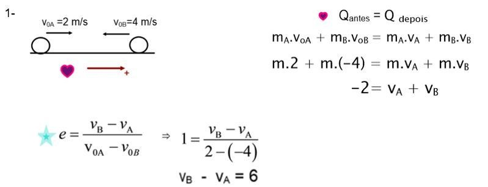
Exercício 1 · parte 1 de 2
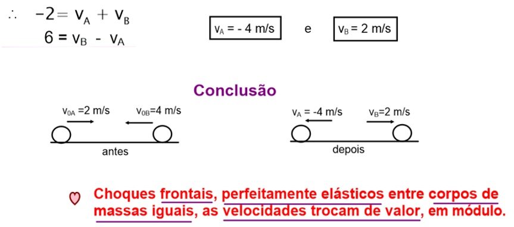
Exercício 1 · parte 2 de 2
Resolução original da professora Rosana C. — Pádua · Choques — Exercícios — Resolução.
02
Exercício 2 · Choque inelástico e variação de energia
Entenda a resolução
O corpo de 4 kg chega a 3 m/s; o de 2 kg está parado. A perda máxima de energia cinética corresponde ao choque perfeitamente inelástico: os dois terminam com a mesma velocidade.
Conserve a quantidade de movimento no impacto. Antes: 4 × 3 + 2 × 0 = 12 kg·m/s. Depois: (4 + 2)V. Assim, 12 = 6V e V = 2 m/s para ambos, no sentido do corpo que vinha se movendo.
Calcule a energia cinética antes. Só o corpo de 4 kg estava em movimento: Eantes = ½ × 4 × 3² = 18 J.
Calcule a energia depois. Os 6 kg se movem a 2 m/s: Edepois = ½ × 6 × 2² = 12 J.
Faça depois menos antes. ΔE = 12 − 18 = −6 J. O sinal negativo mostra uma redução da energia cinética; 6 J foram transformados em outras formas de energia, como deformação, calor e som.
Resposta: a) 2 m/s para os dois corpos. b) ΔE = −6 J.
Atenção: Quantidade de movimento conservada não significa energia cinética conservada. Elas obedecem a condições diferentes.
Resolução da professora
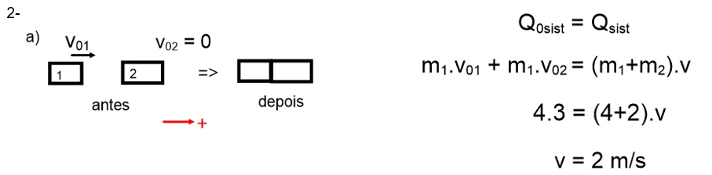
Exercício 2 · parte 1 de 2
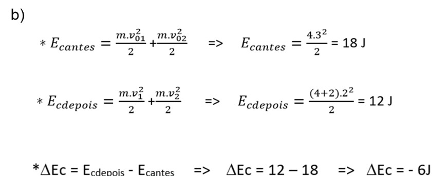
Exercício 2 · parte 2 de 2
Resolução original da professora Rosana C. — Pádua · Choques — Exercícios — Resolução.
03
Exercício 3 · Restituição e energia dissipada
Entenda a resolução
Primeiro precisamos descobrir como A sai do choque. Só depois conseguimos comparar a separação com a aproximação e calcular a energia perdida.
Descubra a velocidade final de A. Podemos manter g e cm/s nesta primeira conta, pois as unidades são consistentes: 200 × 5 = 200vA + 300 × 3. Então 1000 = 200vA + 900, e vA = 0,5 cm/s, para a direita.
Calcule o coeficiente de restituição. Antes, A se aproximava de B a 5 − 0 = 5 cm/s. Depois, B se afasta de A a 3 − 0,5 = 2,5 cm/s. Portanto, e = 2,5 / 5 = 0,5.
Compare as energias. Em unidades do SI, as massas são 0,2 e 0,3 kg; as velocidades são 0,05, 0,005 e 0,03 m/s. A energia inicial é ½ × 0,2 × 0,05² = 0,000250 J. A final é ½ × 0,2 × 0,005² + ½ × 0,3 × 0,03² = 0,0001375 J.
Transforme a perda em porcentagem. A perda é 0,000250 − 0,0001375 = 0,0001125 J. Dividindo pela energia inicial e multiplicando por 100: 0,0001125 / 0,000250 × 100 = 45%.
Resposta: a) e = 0,5. b) 45% da energia cinética inicial foi dissipada.
Atenção: A professora mantém g e cm/s nas energias, obtendo 2500 e 1375 nessas unidades. Convertendo para joules, os números mudam; a porcentagem continua sendo 45%.
Resolução da professora
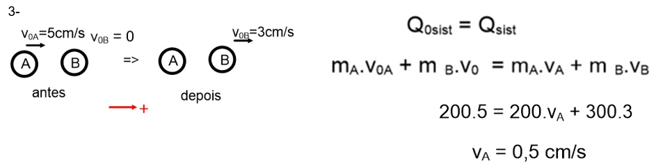
Exercício 3 · parte 1 de 3
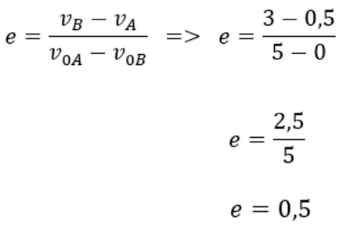
Exercício 3 · parte 2 de 3
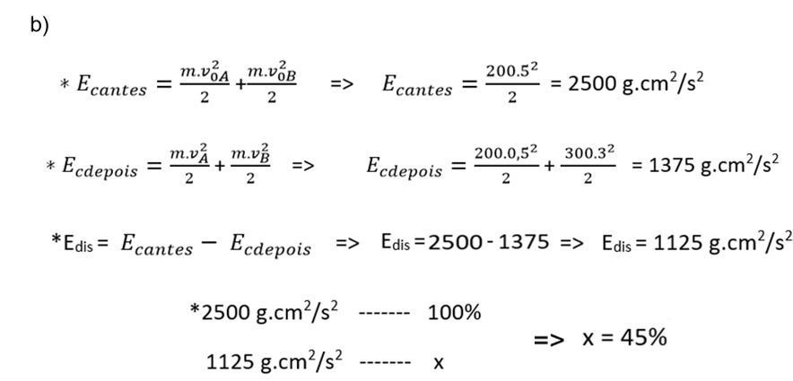
Exercício 3 · parte 3 de 3
Resolução original da professora Rosana C. — Pádua · Choques — Exercícios — Resolução.
04
Exercício 4 · Velocidades e sentidos após o choque
Entenda a resolução
M vem para a direita a 5 m/s e N vem para a esquerda a 3 m/s. Escolher a direita como positiva evita misturar os sentidos durante as contas.
Monte a conservação da quantidade de movimento. Antes: 15 × 5 + 13 × (−3) = 36 kg·m/s. Depois: 15vM + 13vN. Logo, 15vM + 13vN = 36.
Use o coeficiente de restituição. A aproximação inicial vale 5 − (−3) = 8 m/s. Como e = ¾, a separação final vale ¾ × 8 = 6 m/s. Assim, vN − vM = 6, ou vN = vM + 6.
Substitua uma equação na outra. 15vM + 13(vM + 6) = 36. Desenvolvendo: 28vM + 78 = 36; portanto, vM = −42/28 = −1,5 m/s.
Encontre N e leia os sinais. vN = −1,5 + 6 = +4,5 m/s. M inverteu o movimento e sai para a esquerda; N sai para a direita.
Resposta: M: 1,5 m/s para a esquerda. N: 4,5 m/s para a direita.
Resolução da professora
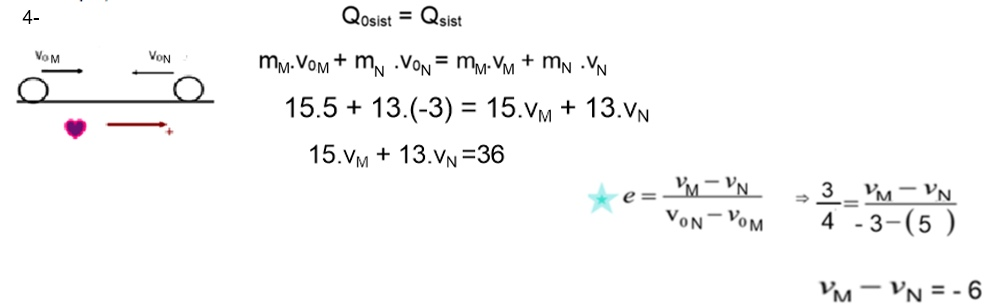
Exercício 4 · parte 1 de 2
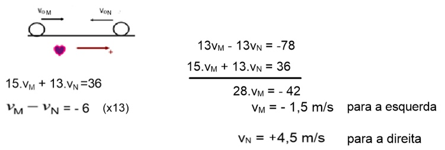
Exercício 4 · parte 2 de 2
Resolução original da professora Rosana C. — Pádua · Choques — Exercícios — Resolução.
05
Exercício 5 · Momento linear no gráfico
Entenda a resolução
O gráfico não dá as massas diretamente, mas relaciona quantidade de movimento Q e velocidade v. Como Q = mv, a razão Q/v revela a massa de cada esfera.
Leia a massa de A no gráfico. Para A, v = 8 m/s e Q = 80 × 10−3 kg·m/s. Então mA = Q/v = 0,080/8 = 0,010 kg, ou 10 g.
Leia a massa de B. Para B, v = 1 m/s e Q = 25 × 10−3 kg·m/s. Então mB = 0,025/1 = 0,025 kg, ou 25 g.
Some os movimentos iniciais. As duas esferas se movem para a direita: Qinicial = 0,010 × 8 + 0,025 × 1 = 0,105 kg·m/s.
Use uma única velocidade final. O choque é perfeitamente inelástico, então A e B saem juntas. A massa total é 0,035 kg: 0,105 = 0,035V. Portanto, V = 3 m/s.
Resposta: As duas esferas saem a 3,0 m/s para a direita.
Atenção: O valor de Q no gráfico não é a massa. É preciso dividir Q pela velocidade correspondente.
Resolução da professora
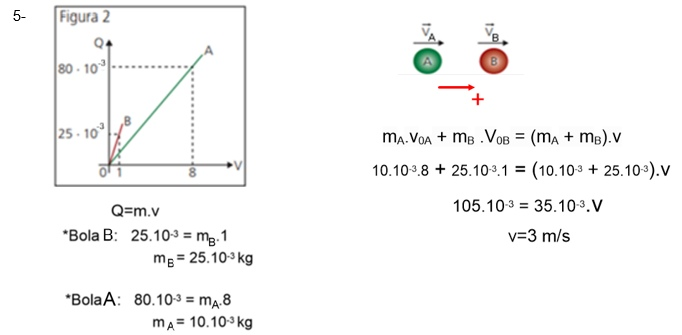
Exercício 5 · parte 1 de 1
Resolução original da professora Rosana C. — Pádua · Choques — Exercícios — Resolução.
06
Exercício 6 · Projétil, bloco e mola
Entenda a resolução
A bala fica presa no bloco e, em seguida, os dois comprimem a mola. São dois momentos diferentes: no choque usamos quantidade de movimento; na compressão sem atrito usamos energia.
Converta as massas. Bala: 12 g = 0,012 kg. Bloco: 132 g = 0,132 kg. Juntos: 0,144 kg.
Encontre a velocidade logo após o impacto. A bala traz 0,012 × 200 = 2,4 kg·m/s. O bloco estava parado. Portanto, 2,4 = 0,144V e V = 16,67 m/s, aproximadamente.
Pense na compressão máxima. Nesse instante, o conjunto para por um momento. A energia cinética que ele tinha após o choque virou energia potencial elástica: ½ × 0,144 × V² = ½ × k × x².
Substitua os valores sem arredondar V cedo demais. A energia cinética após o impacto é 20 J e k = 16000 N/m. Logo, 20 = ½ × 16000 × x²; x² = 0,0025 m²; x = 0,05 m = 5 cm.
Resposta: A deformação máxima da mola é 5 cm.
Atenção: Não passe a energia cinética inicial da bala diretamente para a mola: parte dela é dissipada quando a bala se incrusta no bloco.
Resolução da professora
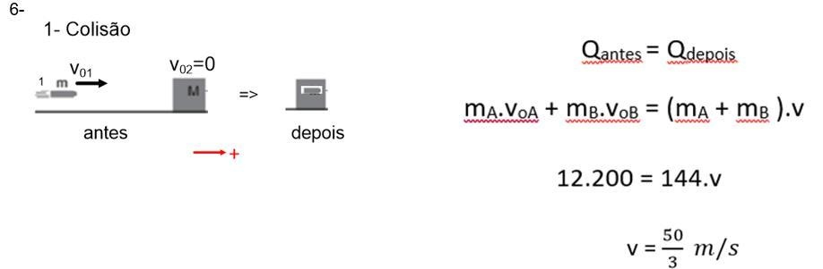
Exercício 6 · parte 1 de 2
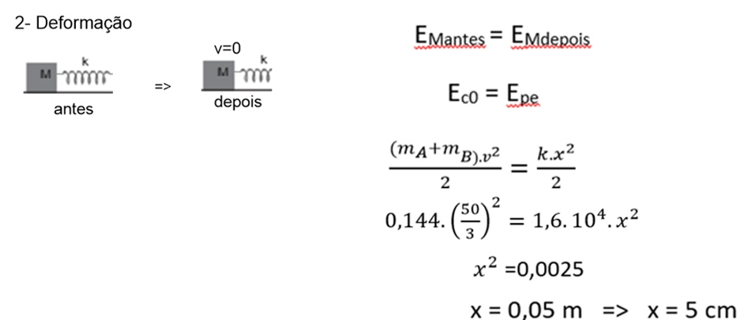
Exercício 6 · parte 2 de 2
Resolução original da professora Rosana C. — Pádua · Choques — Exercícios — Resolução.
07
Exercício 7 · Queda e coeficiente de restituição
Entenda a resolução
O coeficiente de restituição compara a rapidez logo depois da batida com a rapidez logo antes dela. As duas alturas permitem encontrar essas velocidades sem precisar usar a massa.
Relacione a queda com a velocidade de chegada. Desprezando a resistência do ar, mgh1 = ½mvantes². A massa cancela, e vantes = √(2gh1).
Faça o mesmo para a subida. A velocidade logo depois da batida precisa permitir a subida até h2: vdepois = √(2gh2).
Divida as duas velocidades. Como o solo está parado, e = vdepois/vantes. O fator 2g cancela dentro das raízes: e = √(h2/h1).
Substitua as alturas. e = √(20/80) = √0,25 = 0,5. A rapidez imediatamente depois do impacto é metade da rapidez imediatamente antes.
Resposta: e = 0,5.
Atenção: Não basta fazer 20/80: isso compara as alturas. Para comparar as velocidades, é necessário tirar a raiz quadrada.
Resolução da professora
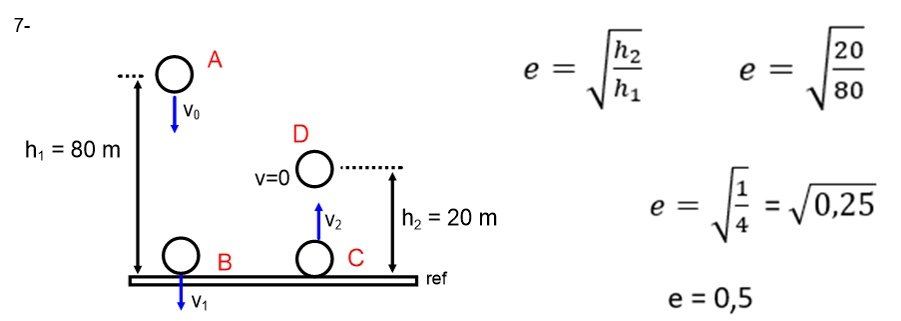
Exercício 7 · parte 1 de 1
Resolução original da professora Rosana C. — Pádua · Choques — Exercícios — Resolução.
08
Exercício 8 · Descida e colisão entre blocos
Entenda a resolução
O primeiro bloco ganha velocidade ao descer. Depois bate no segundo, que estava parado, e os dois seguem juntos. Vamos resolver a descida antes de resolver a colisão.
Encontre a velocidade na parte de baixo. Como não há atrito, a energia da altura vira energia cinética: mgh = ½mv². Cancelando m e adotando g = 10 m/s², temos v² = 2 × 10 × 0,8 = 16. Então v = 4 m/s.
Agora analise só o choque. Antes, apenas um bloco se movia: Q = 0,5 × 4 = 2 kg·m/s. Depois, os dois estão unidos e têm massa total de 1 kg.
Encontre a velocidade comum. Conservar Q dá 2 = 1 × V. Portanto, V = 2 m/s, no sentido em que o primeiro bloco vinha se movendo.
Confira a ideia física. A mesma quantidade de movimento passa a ser carregada pelo dobro da massa. Por isso a velocidade cai de 4 para 2 m/s.
Resposta: Os blocos seguem juntos a 2 m/s.
Atenção: A energia mecânica se conserva na descida sem atrito. A energia cinética não se conserva no choque perfeitamente inelástico.
Resolução da professora
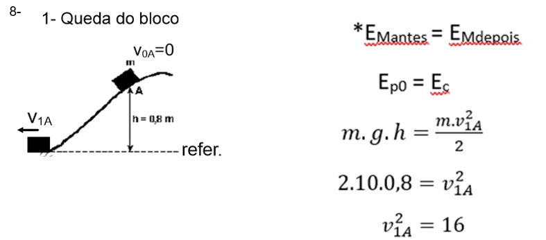
Exercício 8 · parte 1 de 2
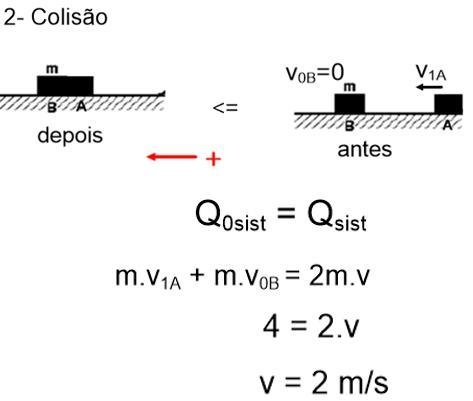
Exercício 8 · parte 2 de 2
Resolução original da professora Rosana C. — Pádua · Choques — Exercícios — Resolução.
09
Exercício 9 · Pêndulo balístico
Entenda a resolução
A altura alcançada conta como o conjunto estava se movendo depois do choque. Por isso é mais fácil resolver de trás para frente: primeiro a subida, depois o impacto.
Converta os dados. Projétil: 20 g = 0,020 kg. Pêndulo: 2 kg. Altura: 20 cm = 0,20 m. Depois do choque, a massa em movimento é 2,020 kg.
Use a subida para encontrar V. Após o impacto não há dissipação no modelo: ½(m + M)V² = (m + M)gh. A massa cancela: V = √(2 × 10 × 0,20) = 2 m/s.
Volte ao instante do choque. Só o projétil se movia antes. Assim, 0,020v0 = 2,020 × 2. O lado direito vale 4,040 kg·m/s.
Isole a velocidade do projétil. v0 = 4,040/0,020 = 202 m/s. A resolução da professora apresenta esse resultado aproximado para 200 m/s.
Resposta: v0 = 202 m/s, aproximadamente 200 m/s, como no gabarito.
Atenção: Não conserve energia cinética durante o impacto: o projétil fica alojado no pêndulo. A conservação da energia vale para a subida que vem depois.
Resolução da professora
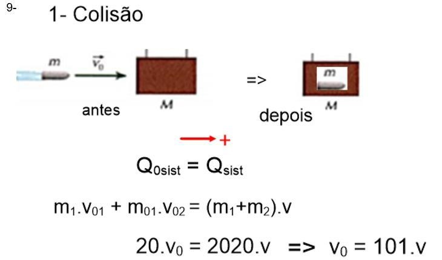
Exercício 9 · parte 1 de 2
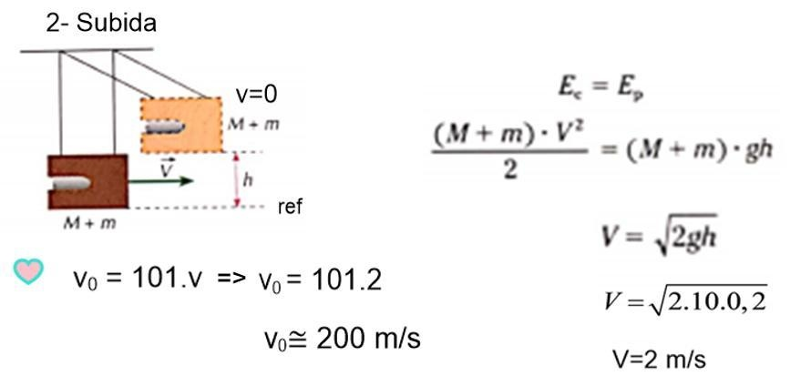
Exercício 9 · parte 2 de 2
Resolução original da professora Rosana C. — Pádua · Choques — Exercícios — Resolução.
10
Exercício 10 · Pêndulo: velocidade, altura e tensão
Entenda a resolução
Aqui há três perguntas ligadas: a velocidade imediatamente após o choque, a altura atingida na subida e a tensão da corda no ponto mais alto.
Velocidade após o choque. A pedra tem 10 g = 0,010 kg e fica presa no pêndulo de 6 kg. Conserve o movimento horizontal: 0,010 × 600 = 6,010V. Logo, V = 6/6,010 ≈ 0,998 m/s, aproximadamente 1 m/s.
Altura máxima. Na subida, a energia cinética do conjunto vira energia potencial gravitacional. Assim, h = V²/(2g) ≈ 0,998²/20 ≈ 0,0498 m. Com o arredondamento da professora, h ≈ 0,05 m, ou 5 cm.
Descubra o ângulo da corda. A corda mede 1 m. No ponto mais alto, sua projeção vertical mede L − h. Portanto, cos θ = (L − h)/L ≈ (1 − 0,05)/1 = 0,95. A altura de 0,05 m é vertical; não é a distância percorrida no arco.
Analise as forças na direção da corda. Nesse instante a velocidade é zero, então a aceleração centrípeta v²/L também é zero. A tensão equilibra apenas a componente do peso nessa direção: T = (M + m)g cos θ.
Calcule a tensão. Usando a aproximação da resolução: T = 6,010 × 10 × 0,95 ≈ 57 N. Mantendo todos os valores antes de arredondar, o resultado também fica aproximadamente 57 N.
Resposta: a) V ≈ 1 m/s. b) h ≈ 0,05 m e T ≈ 57 N.
Atenção: Parar por um instante no ponto mais alto não significa equilíbrio estático. Existe uma componente tangencial do peso que faz o pêndulo voltar. Por isso não podemos simplesmente escrever T = peso.
Resolução da professora
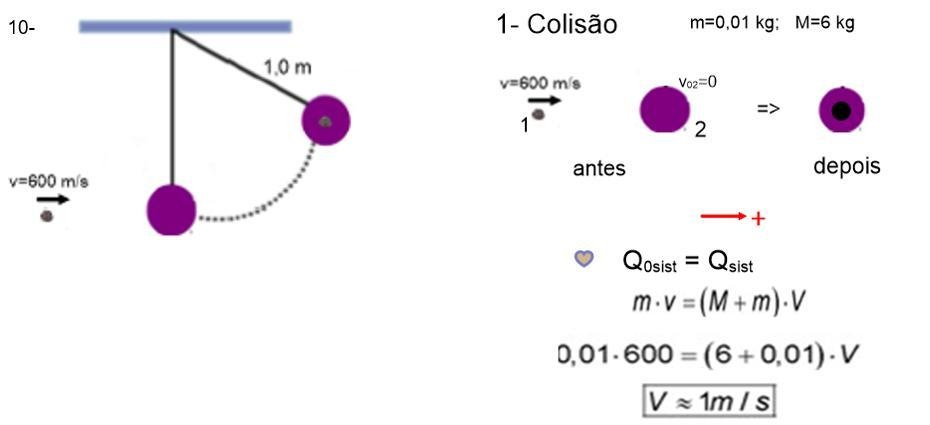
Exercício 10 · parte 1 de 4
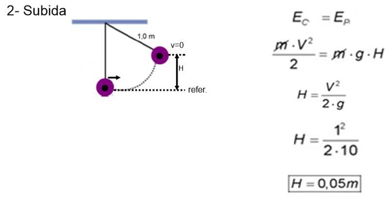
Exercício 10 · parte 2 de 4
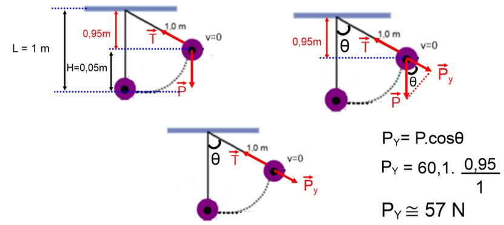
Exercício 10 · parte 3 de 4
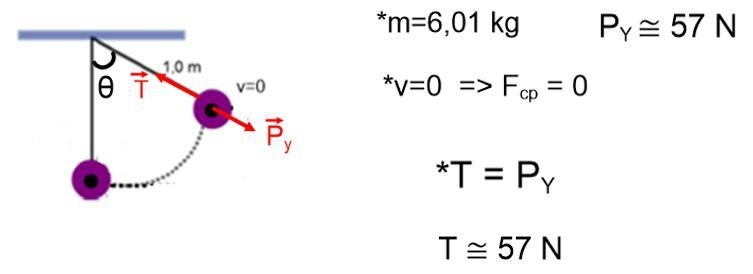
Exercício 10 · parte 4 de 4
Resolução original da professora Rosana C. — Pádua · Choques — Exercícios — Resolução.
11
Exercício 11 · Choque em duas dimensões
Entenda a resolução
Como A sai na direção de y e B na direção de x, cada uma fica responsável por uma componente do movimento final. Vamos conservar a quantidade de movimento em cada eixo separadamente.
Decomponha a velocidade inicial de A. O ângulo indicado é com a direção de x. Então vAx,antes = 5 cos α = 5 × 0,8 = 4 m/s; vAy,antes = 5 sen α = 5 × 0,6 = 3 m/s. Como mA = 1 kg, as componentes de Q são 4 e 3 kg·m/s.
Use o eixo x para achar a massa de B. Depois, A não tem componente em x; só B leva o movimento nesse eixo. Logo, 4 = mB × 3. Portanto, mB = 4/3 kg ≈ 1,33 kg.
Use o eixo y para achar a velocidade de A. Depois, B não tem componente em y. Assim, 3 = 1 × vA, de onde vA = 3 m/s, no sentido positivo de y.
Leia o triângulo da professora. Ela chega às mesmas relações usando cos α e sen α no triângulo dos vetores quantidade de movimento: a componente horizontal é 0,8 da inicial e a vertical é 0,6 da inicial.
Resposta: a) mB ≈ 1,33 kg. b) A sai a 3 m/s no sentido positivo de y.
Atenção: Não é necessário supor choque elástico. A conservação da quantidade de movimento em x e em y já fornece as duas respostas.
Resolução da professora
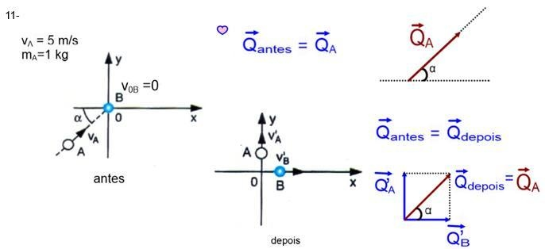
Exercício 11 · parte 1 de 3
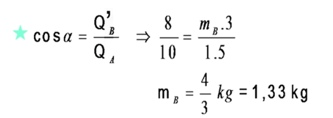
Exercício 11 · parte 2 de 3
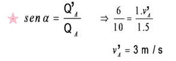
Exercício 11 · parte 3 de 3
Resolução original da professora Rosana C. — Pádua · Choques — Exercícios — Resolução.
12
Exercício 12 · Sinuca e energia cinética
Entenda a resolução
As bolas têm massas iguais. No desenho, B sai na direção de y e A sai na direção de x. O cuidado principal é que o ângulo inicial foi medido a partir de y, não de x.
Encontre o cosseno. Sabemos que sen α = 0,80. Como o ângulo do desenho é agudo, cos α = √(1 − 0,80²) = √0,36 = 0,60.
Separe a velocidade inicial de A. A componente junto ao eixo y usa cosseno; a do eixo x usa seno. Assim, vx,antes = 2 × 0,80 = 1,6 m/s e vy,antes = 2 × 0,60 = 1,2 m/s.
Conserve Q em cada direção. Depois, só A se move em x. Como as massas são iguais, m × 1,6 = m × vAx, então vAx = 1,6 m/s. Só B se move em y: m × 1,2 = m × vBy, então vBy = 1,2 m/s. As outras componentes são zero.
Calcule a energia inicial. Cada bola tem 200 g = 0,200 kg, mas só A estava se movendo. Eantes = ½ × 0,200 × 2² = 0,400 J.
Some as energias finais e compare. Edepois = ½ × 0,200 × 1,6² + ½ × 0,200 × 1,2² = 0,256 + 0,144 = 0,400 J. Portanto, ΔE = Edepois − Eantes = 0.
Resposta: a) vAx = 1,6 m/s; vAy = 0; vBx = 0; vBy = 1,2 m/s. b) ΔE = 0 J.
Atenção: Seno e cosseno dependem de onde o ângulo foi marcado. Nesta questão, trocar os dois eixos inverte as componentes e leva a uma resposta errada.
Resolução da professora
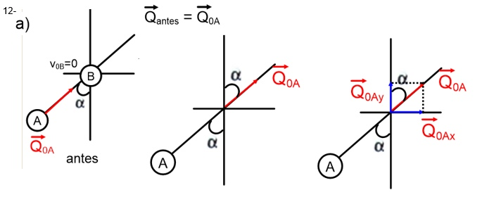
Exercício 12 · parte 1 de 4
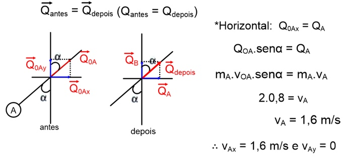
Exercício 12 · parte 2 de 4
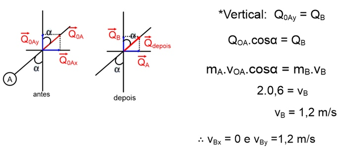
Exercício 12 · parte 3 de 4
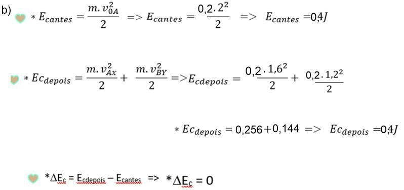
Exercício 12 · parte 4 de 4
Resolução original da professora Rosana C. — Pádua · Choques — Exercícios — Resolução.
Suas duas folhas organizadas: o círculo do MCU e sua projeção na reta do MHS, a origem das fórmulas e as resoluções dos exercícios 10 a 17 da Lista 11.
Imagine uma luz de cima projetando a bolinha do círculo sobre a reta horizontal de baixo. A bolinha P gira com velocidade angular constante: isso é MCU. A projeção P′ vai e volta em linha reta: isso é MHS. A linha tracejada liga as duas posições no mesmo instante.
MCU e sua projeção no MHSBaseado nas suas anotações
Mantidos os elementos da sua folha: círculo, raio A, ângulo φ, ângulo complementar θ, posição x, projeção vertical e reta inferior entre −A e +A. Os vetores indicam o sentido no ponto desenhado; o esquema não está em escala.
O raio do círculo vira a amplitude A do MHS. Quando P está na lateral direita, a projeção está em +A. Na lateral esquerda, ela está em −A. Quando P passa pelo alto ou pela parte de baixo do círculo, a projeção passa pelo centro O.
Suas duas folhas de anotações · Lista 11 — MHS — Cinemática, professor Fábio (13/10/2026).
02
Os símbolos e as relações anotadas
Estas são as grandezas das duas folhas. O professor usa a mesma fase angular para localizar a bolinha no círculo e sua projeção na reta.
Símbolo
Na sua folha
Unidade
ω
Velocidade angular no MCU; pulsação ou frequência angular no MHS.
rad/s
φ₀
Posição angular inicial no círculo; fase inicial no MHS.
rad
φ
Posição angular ou fase no instante t.
rad
A
Raio do círculo e amplitude da oscilação.
m
x
Elongação: posição da projeção em relação a O, com sinal.
m
γ ou a
Aceleração do MHS. Aqui os dois símbolos significam a mesma grandeza.
m/s²
φ = φ₀ + ωt · vMCU = ωA · aMCU = vMCU²/A = ω²A
A primeira relação soma o ângulo inicial ao ângulo girado em t segundos. A segunda transforma a velocidade angular em rapidez sobre a circunferência. A terceira dá o módulo da aceleração centrípeta, sempre apontando para o centro.
Para a lista: frequência f conta oscilações por segundo, em hertz (Hz); período T é o tempo de uma oscilação. Uma volta tem 2π rad, então T = 1/f e ω = 2πf = 2π/T. Para passar de rpm a Hz, divida por 60.
Suas duas folhas de anotações · Lista 11 — MHS — Cinemática, professor Fábio (13/10/2026).
03
De onde vem x = A cos(φ₀ + ωt)
Olhe o triângulo retângulo dentro do círculo. A hipotenusa é o raio A. O cateto horizontal, adjacente ao ângulo φ, mede x quando estamos no primeiro quadrante, como no desenho.
Pela definição de cosseno, cos φ = x/A. Multiplicando por A, obtemos x = A cos φ.
A bolinha continua girando, então o ângulo muda com o tempo: φ = φ₀ + ωt.
Substituindo essa fase na projeção, aparece a função horária da elongação:
x(t) = A cos(φ₀ + ωt)
Nos outros quadrantes, o cosseno fornece também o sinal da posição: positivo à direita de O e negativo à esquerda. A sempre é positiva; quem decide de que lado a projeção está é o cosseno.
Suas duas folhas de anotações · Lista 11 — MHS — Cinemática, professor Fábio (13/10/2026).
04
De onde vem v = −ωA sen(φ₀ + ωt)
A velocidade da bolinha é tangente ao círculo. O MHS recebe a componente horizontal dessa velocidade. No ponto desenhado na sua folha, a bolinha sobe para a esquerda; por isso a projeção anda para a esquerda e v é negativa.
A velocidade também é projetadaBaseado nas suas anotações
O triângulo da velocidade usa um ângulo complementar ao do raio. Por isso a projeção horizontal envolve sen φ, enquanto a posição envolve cos φ.
A rapidez no círculo é vMCU = ωA.
No primeiro quadrante, o módulo da componente horizontal é |vMHS| = vMCU sen φ. Como a seta aponta para a esquerda, a componente tem sinal negativo.
Ao acompanhar todos os quadrantes, a expressão com sinal fica v = −ωA sen φ. Substitua φ = φ₀ + ωt:
v(t) = −ωA sen(φ₀ + ωt)
No centro, x = 0 e a rapidez é máxima: |v|máx = ωA. Nos extremos x = ±A, a bolinha do círculo tem velocidade vertical; sua componente horizontal é zero. É por isso que o MHS para por um instante antes de voltar.
Suas duas folhas de anotações · Lista 11 — MHS — Cinemática, professor Fábio (13/10/2026).
05
De onde vêm γ = −ω²A cos φ e γ = −ω²x
A aceleração no MCU aponta para o centro do círculo. Seu módulo é ω²A. Como no desenho da sua folha, projetamos esse vetor na horizontal para obter a aceleração do MHS.
A componente horizontal tem módulo aMCU cos φ no primeiro quadrante. A seta aponta para a esquerda, dando γ = −aMCU cos φ.
Troque o módulo centrípeto por aMCU = ω²A. Assim, γ = −ω²A cos φ.
Como φ = φ₀ + ωt, obtemos a função horária. E como A cos φ = x, podemos escrever a mesma aceleração diretamente em função da posição.
γ(t) = −ω²A cos(φ₀ + ωt) γ = −ω²x
O sinal negativo significa aceleração voltada para o equilíbrio. Se x é positivo, γ é negativa. Se x é negativo, γ é positiva. No centro, γ = 0; nos extremos, o módulo é máximo: |γ|máx = ω²A.
Suas duas folhas de anotações · Lista 11 — MHS — Cinemática, professor Fábio (13/10/2026).
06
Como escolher a fase e usar as fórmulas na lista
A posição inicial sozinha às vezes deixa duas possibilidades para a bolinha no círculo. O sentido inicial do movimento escolhe qual delas é a correta. Use x₀ = A cos φ₀ e v₀ = −ωA sen φ₀.
Condição inicial
Fase possível
Por quê?
x₀ = +A; parte do repouso
φ₀ = 0
cos 0 = 1 e sen 0 = 0.
x₀ = −A; parte do repouso
φ₀ = π
cos π = −1 e sen π = 0.
x₀ = 0; movimento retrógrado (v₀ < 0)
φ₀ = π/2
sen φ₀ = +1; o sinal de v é negativo.
x₀ = 0; movimento progressivo (v₀ > 0)
φ₀ = 3π/2 ou −π/2
sen φ₀ = −1; o sinal de v é positivo.
Quando a questão dá x e pede a velocidade: como cos²φ + sen²φ = 1, as duas projeções permitem eliminar o ângulo:
A raiz fornece o módulo da velocidade. Para saber o sinal, precisamos saber se a partícula está indo para a direita ou para a esquerda. Para intervalos de tempo, conte o ângulo realmente percorrido pela bolinha e use Δt = Δφ/ω.
Suas duas folhas de anotações · Lista 11 — MHS — Cinemática, professor Fábio (13/10/2026).
Lista 11 · MHS · Cinemática
Exercícios 10 a 17
As resoluções abaixo usam o círculo e as fórmulas das suas folhas. Os enunciados originais podem ser abertos em cada exercício.
07
Exercício 10 · A sombra da manivela e as três fases iniciais
Ver o enunciado original
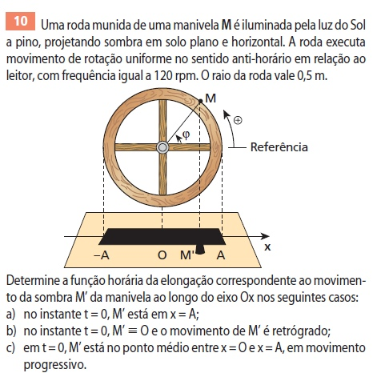
Lista 11 · exercício 10 · enunciado original
A roda gira no sentido anti-horário, tem raio 0,5 m e frequência de 120 rpm. Sua sombra na reta realiza MHS. A questão muda apenas a posição e o sentido no instante inicial.
Entenda a resolução
Dados comuns aos três casos. A = 0,5 m. A frequência é 120/60 = 2 Hz e ω = 2πf = 4π rad/s. Portanto, todas as respostas têm a forma x = 0,5 cos(4πt + φ₀).
a) A sombra começa em x = +A. A bolinha deve começar na lateral direita do círculo. Podemos usar φ₀ = 0, pois cos 0 = 1. Logo, x(t) = 0,5 cos(4πt).
b) Começa em O, com movimento retrógrado. Retrógrado significa v < 0: a sombra está indo para a esquerda. No círculo anti-horário, isso ocorre quando a bolinha está no alto: φ₀ = π/2. Assim, x(t) = 0,5 cos(4πt + π/2).
c) Começa a meio caminho entre O e +A, em movimento progressivo. x₀ = A/2, então cos φ₀ = 1/2. As fases π/3 e 5π/3 dão essa posição, mas v₀ > 0 exige sen φ₀ < 0. Escolhemos o quarto quadrante, φ₀ = 5π/3, equivalente a −π/3. Logo, x(t) = 0,5 cos(4πt − π/3).
Resposta: a) 0,5 cos(4πt); b) 0,5 cos(4πt + π/2); c) 0,5 cos(4πt − π/3). Posições em metros, t em segundos.
Suas duas folhas de anotações · Lista 11 — MHS — Cinemática, professor Fábio (13/10/2026).
08
Exercício 11 · Mola comprimida: qual é a função da velocidade?
Ver o enunciado original
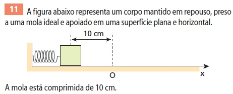
Lista 11 · exercício 11 · enunciado original
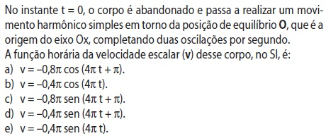
Lista 11 · exercício 11 · enunciado original
O bloco é solto do repouso com a mola comprimida 10 cm à esquerda do equilíbrio. Ele completa duas oscilações por segundo. Precisamos escolher a expressão de v(t).
Entenda a resolução
Amplitude e pulsação. A = 10 cm = 0,10 m; f = 2 Hz; ω = 4π rad/s.
Localize a posição inicial no círculo. A compressão coloca o bloco em x₀ = −A, sem velocidade inicial. A bolinha auxiliar começa na lateral esquerda: φ₀ = π.
Use a fórmula da sua folha. v = −ωA sen(φ₀ + ωt). Substituindo: v(t) = −0,4π sen(4πt + π) m/s.
Confira o sentido logo depois de soltar. Como sen(u + π) = −sen u, a mesma função pode ser escrita v(t) = +0,4π sen(4πt). Para t pequeno e positivo, v é positiva: o bloco vai da esquerda para o equilíbrio, como deve ocorrer.
Suas duas folhas de anotações · Lista 11 — MHS — Cinemática, professor Fábio (13/10/2026).
09
Exercício 12 · O intervalo é um arco do círculo
Ver o enunciado original
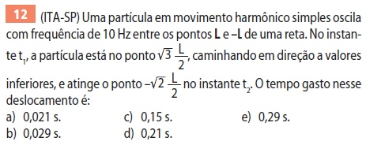
Lista 11 · exercício 12 · enunciado original
A partícula oscila entre −L e +L, com f = 10 Hz. Sai de x₁ = (√3/2)L, indo para posições menores, e chega a x₂ = −(√2/2)L. Procuramos o primeiro instante em que atinge esse destino.
Entenda a resolução
Use o raio A = L. Pela projeção, x/L = cos φ. A pulsação é ω = 2πf = 20π rad/s.
Escolha a fase inicial pelo sentido. cos φ₁ = √3/2 permite π/6 ou 11π/6. Como x está diminuindo, v < 0, então sen φ₁ > 0. A escolha correta é φ₁ = π/6, no primeiro quadrante.
Acompanhe a bolinha anti-horária até o destino. O primeiro ponto com cos φ₂ = −√2/2 é φ₂ = 3π/4, no segundo quadrante. Usar 5π/4 significaria esperar a bolinha passar pelo extremo esquerdo e voltar.
Transforme ângulo em tempo. Δt = Δφ/ω = (7π/12)/(20π) = 7/240 s ≈ 0,0292 s.
Resposta: Alternativa b: aproximadamente 0,029 s.
Suas duas folhas de anotações · Lista 11 — MHS — Cinemática, professor Fábio (13/10/2026).
10
Exercício 13 · Velocidade e aceleração: atenção à unidade da lista
Ver o enunciado original
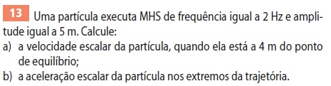
Lista 11 · exercício 13 · enunciado original
A lista informa f = 2 Hz e amplitude A = 5 cm. No item a, porém, está escrito “4 m do ponto de equilíbrio”. Isso precisa ser analisado antes de substituir números.
Entenda a resolução
O item a, como está impresso, é impossível. A = 5 cm = 0,05 m. A partícula só pode ocupar posições de −0,05 a +0,05 m. Uma distância de 4 m está fora da trajetória; não há velocidade real correspondente nesse MHS.
Se a intenção do enunciado era 4 cm, esta é a solução condicional. Nesse caso, |x| = 0,04 m e ω = 2πf = 4π rad/s. Use |v| = ω√(A² − x²): |v| = 4π√(0,05² − 0,04²) = 4π√0,0009 = 0,12π m/s ≈ 0,377 m/s.
O sinal da velocidade não vem só da posição. Na mesma posição, a partícula pode estar indo ou voltando. Se o dado fosse 4 cm, as possibilidades seriam v = +0,12π ou −0,12π m/s, conforme o sentido.
b) Aceleração nos extremos. Pela sua folha, a = −ω²x. O módulo máximo é ω²A = (4π)² × 0,05 = 0,8π² m/s² ≈ 7,90 m/s². Em +A, a = −0,8π²; em −A, a = +0,8π².
Resposta: a) Com 4 m, a posição não existe nesse movimento. Se o dado pretendido era 4 cm: |v| = 0,12π m/s. b) |a| = 0,8π² m/s² nos extremos.
Suas duas folhas de anotações · Lista 11 — MHS — Cinemática, professor Fábio (13/10/2026).
11
Exercício 14 · Descobrir a amplitude usando x e v
Ver o enunciado original
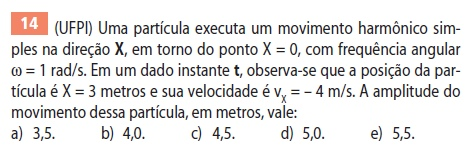
Lista 11 · exercício 14 · enunciado original
Em um instante, x = 3 m, v = −4 m/s e ω = 1 rad/s. Queremos o raio do círculo auxiliar, isto é, a amplitude A.
Entenda a resolução
Elimine a fase. Nas suas folhas, x = A cos φ e v = −ωA sen φ. Elevando ao quadrado e somando, usamos cos²φ + sen²φ = 1. Isso dá A² = x² + v²/ω².
Substitua a posição e a velocidade. A² = 3² + (−4)²/1² = 9 + 16 = 25 m². Portanto, A = 5 m.
Interprete com o círculo. O cateto da posição mede 3 m; o outro cateto, |v|/ω, mede 4 m. A hipotenusa é o raio A: um triângulo 3–4–5. O sinal negativo de v informa que a projeção está andando para a esquerda.
Resposta: Alternativa d: amplitude de 5,0 m.
Suas duas folhas de anotações · Lista 11 — MHS — Cinemática, professor Fábio (13/10/2026).
12
Exercício 15 · Três oscilações a cada volta da peça
Ver o enunciado original
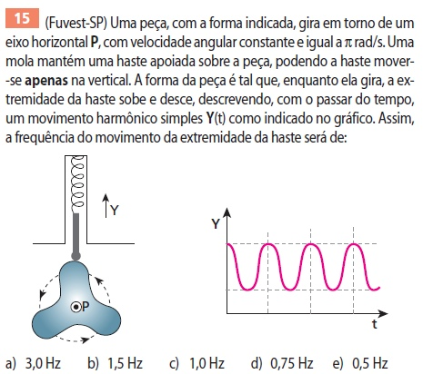
Lista 11 · exercício 15 · enunciado original
A peça gira com velocidade angular π rad/s. A haste encosta no contorno, que possui três saliências iguais. Cada saliência faz a haste subir e descer uma vez.
Entenda a resolução
Calcule a frequência de rotação. Uma volta completa tem 2π rad. Então Trotação = 2π/ω = 2π/π = 2 s e frotação = 1/2 = 0,5 Hz.
Conte os ciclos da haste. Há três saliências; portanto, em uma volta da peça a haste faz três oscilações. O período da haste é 2/3 s.
Calcule a frequência pedida. fhaste = 3 × frotação = 3 × 0,5 = 1,5 Hz.
Resposta: Alternativa b: frequência de 1,5 Hz.
Suas duas folhas de anotações · Lista 11 — MHS — Cinemática, professor Fábio (13/10/2026).
13
Exercício 16 · Diâmetro, voltas por segundo e função x(t)
Ver o enunciado original
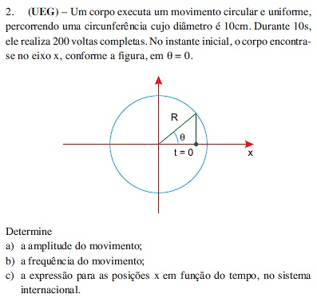
Lista 11 · exercício 16 · enunciado original
O corpo percorre uma circunferência de diâmetro 10 cm e completa 200 voltas em 10 s. Na figura inicial ele está na lateral direita do círculo, com ângulo zero. A posição x é sua projeção horizontal.
Entenda a resolução
a) Encontre o raio. A = R = diâmetro/2 = 10/2 = 5 cm = 0,05 m. A amplitude da projeção não é o diâmetro inteiro.
b) Conte voltas por segundo. f = 200/10 = 20 Hz. Assim, T = 0,05 s e ω = 2πf = 40π rad/s.
c) Escolha a fase inicial. No instante zero, a bolinha está no eixo x positivo: x₀ = +A, φ₀ = 0. Pela fórmula da folha, x(t) = 0,05 cos(40πt).
Faça uma conferência. Em t = 0, x = +0,05 m. Depois de um quarto de período (0,0125 s), a bolinha chega ao alto do círculo e a projeção passa por x = 0. Em meio período, x = −0,05 m.
Resposta: a) A = 0,05 m. b) f = 20 Hz. c) x(t) = 0,05 cos(40πt), no SI.
Suas duas folhas de anotações · Lista 11 — MHS — Cinemática, professor Fábio (13/10/2026).
14
Exercício 17 · Partir do centro indo para a esquerda
Ver a figura original
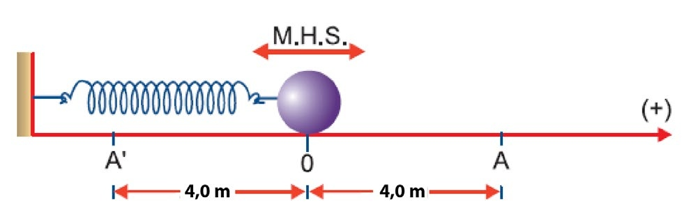
Lista 11 · exercício 17 · figura do sistema
O bloco oscila entre A e A′, ambos a 4,0 m de O. O eixo positivo aponta de O para A, à direita. Em t = 0 ele passa pelo centro indo para A′, à esquerda, e o período é 4,0 s.
Entenda a resolução
Encontre A e ω. A amplitude é 4 m (a distância de O até um extremo), e não 8 m. Como T = 4 s, ω = 2π/T = π/2 rad/s.
Escolha a bolinha inicial. x₀ = 0 exige cos φ₀ = 0. Como o bloco vai para a esquerda, v₀ < 0. Pela função v = −ωA sen φ, isso corresponde a φ₀ = π/2: bolinha no alto do círculo.
a) Função da elongação.x(t) = 4 cos(πt/2 + π/2) = −4 sen(πt/2) m. A forma com seno é a mesma função, pois cos(u + π/2) = −sen u.
b) Função da velocidade. v(t) = −ωA sen(φ₀ + ωt). Portanto, v(t) = −2π sen(πt/2 + π/2) = −2π cos(πt/2) m/s. Em t = 0, v = −2π: ele realmente vai para a esquerda.
c) Função da aceleração. γ(t) = −ω²A cos(φ₀ + ωt). Então γ(t) = −π² cos(πt/2 + π/2) = π² sen(πt/2) m/s². Também obtemos isso usando γ = −ω²x.
d) Módulo da aceleração em x = +2 m. γ = −(π/2)² × 2 = −π²/2 m/s². O pedido é o módulo: |γ| = π²/2 ≈ 4,93 m/s². O sinal negativo da aceleração aponta de volta para O.
Resposta: a) x = −4 sen(πt/2) m; b) v = −2π cos(πt/2) m/s; c) γ = π² sen(πt/2) m/s²; d) |γ| = π²/2 m/s².
Suas duas folhas de anotações · Lista 11 — MHS — Cinemática, professor Fábio (13/10/2026).
O Atlas organiza conceitos para revisão. As referências abaixo identificam o recorte dos materiais escolares usado nos resumos. Consulte os arquivos completos na biblioteca do StudyFlow.
Biologia
Laboratório 06 — Fotossíntese e Respiração.
Laboratório 07 — Pigmentos Vegetais.
Aula 15 — Hormônios Vegetais.
Aula 16 — Fotoperiodismo.
Filosofia
Filosofia Moderna — A apologia da razão.
Descartes e Espinosa: neste resumo, apenas a parte de Descartes até o slide 35.
Genética
Tarefa de herança dos cromossomos sexuais — professores Ismael e Murilo, outubro de 2026.
Herança quantitativa: complemento didático, identificado nos tópicos correspondentes.
Como usar os esquemas
Diagramas e simuladores ajudam a comparar os conceitos. Gráficos conceituais não representam medidas experimentais; os modelos de cruzamento dependem das condições indicadas em cada exemplo.
Material de revisão elaborado com apoio de IA. Confira conceitos, condições dos exercícios e fórmulas com os materiais da disciplina.
História Geral · materiais e conferência
Resumo elaborado a partir dos slides de Imperialismo na África e Ásia (38 slides), Um mundo em guerra (33 slides), recuperação de Primeira Guerra (9 slides) e gabarito de recuperação. Os exercícios orientaram o conteúdo; o questionário de História traz questões reformuladas para revisão.
Imagens históricas selecionadas dos slides do professor. Os diagramas de relações e a linha do tempo são esquemas didáticos, sem pretensão de representar uma cartografia histórica.
Base principal: Material 21 — Vanguardas europeias, páginas 47–78, com o contexto das páginas 2–5. Recorte confirmado: Futurismo, Dadaísmo e Surrealismo. As reproduções das obras foram extraídas desse PDF, sem geração de versões das pinturas por IA.
A prova de História da Arte do 3º período, 2ª etapa, páginas 1–4, orientou o formato dos exercícios: identificação de movimento, leitura de recursos visuais e relação com o contexto. As questões novas são autorais; não reproduzem nem antecipam uma avaliação futura.
Cuidados de leitura: o episódio de Fonte é corrigido em relação ao slide 61; interpretações como “maçã = pecado” são apresentadas como hipóteses, não como significados únicos. Relatos sobre a origem do nome Dadá e inspirações pessoais não substituem a análise visual.